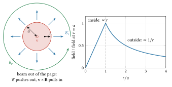
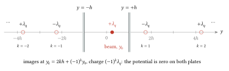
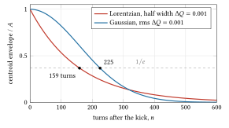
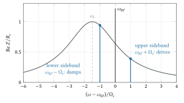
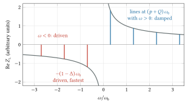
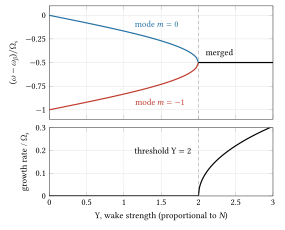
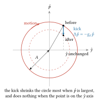
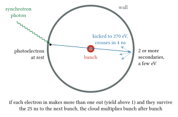

22 Intensity limits: space charge, wakefields and instabilities
1959 to today: the Kapchinskij-Vladimirskij beam and the negative-mass instability (1959), Laslett’s tune shift (1963), Robinson (1964), the ISR, PETRA, the Photon Factory and the LHC; past the wall where a beam’s own fields, and the fields it leaves behind in the machine, stop more particles being added.
Pre-requisites for this chapter.
From Part 0:
- F1 Calculus: the rules for derivatives (the quotient rule in the envelope equation, section 3), the exponential (growth and damping as \(e^{\lambda t}\), sections 9 to 16), small changes (the line moving along the resonance curve, section 9; the damper’s change of amplitude, section 16), Taylor series (the image sums, and \(1 - \beta^2\)), partial derivatives (the continuity equation before section 11) and first differential equations (two coupled equations tried with \(e^{\lambda t}\), section 9).
- F2 Vectors: the cross product (the magnetic force \(q\mathbf{v}\times\mathbf{B}\), section 2) and cylindrical coordinates (the round beam, section 1).
- F3 Mechanics: momentum and impulse (the kick a bunch gives an electron or an ion, sections 17 and 18), simple harmonic motion (betatron and synchrotron oscillations), damped and driven oscillation (friction of either sign, section 9; driven oscillators, section 15) and frames of reference (the beam’s rest frame, section 2 and the section before section 3).
- F4 Electricity and magnetism: Gauss’s law and Ampère’s law (section 1), the magnetic force (section 2), current and Ohm’s law (the resistive wall, sections 7 and 12) and inductance (the inductive wall, before section 6).
- F5 Oscillations and waves: complex numbers, Euler’s formula and oscillations as turning arrows (complex frequencies and amplitudes, sections 6 to 16), the damped oscillator and its Q and resonance (cavity modes, sections 7 to 10), coupled oscillators and normal modes (coupled-bunch modes and mode coupling, sections 10 and 14), phase and group velocity (dispersion relations, before section 11) and Fourier’s idea (a beam’s spectrum, sections 6 to 10).
- F6 Heat and probability: mean, variance and standard deviation (rms sizes and emittance, section 3), the Gaussian (Gaussian bunches, sections 2 to 4), the Boltzmann factor and the speeds of molecules (temperature from a spread of velocities, the section before section 3) and the mean free path (collision rates, sections 18 and 19).
- F7 Atoms and quanta: the electron-volt and mass and energy (\(mc^2\) of the proton and electron, \(\gamma\) and \(\beta\) from a kinetic energy), and light as particles (photoelectrons, section 17).
From the chapters, taught here or earlier:
- Gauss’s law and potentials of simple shapes, taught in chapter 1 and continued in chapter 7: Gauss’s law on a coaxial cylinder, the field of a line charge, and the field inside and outside a uniformly charged cylinder (section 1).
- Biot-Savart and Ampère’s law, taught in chapter 2: Ampère’s law on a circle round a current, for the beam’s azimuthal field (section 1); \(\mu_0c^2 = 1/\varepsilon_0\) is in chapter 13, and the attraction of parallel currents in chapter 7 (section 2).
- Lorentz transformations, time dilation, length contraction, taught in chapter 1 and continued in chapter 12: the line density \(\lambda/\gamma\) in the rest frame, and a transverse force divided by \(\gamma\) between frames (section 2).
- Relativistic motion in electric and magnetic fields, taught in chapter 1: the Lorentz force, the transverse inertia \(\gamma m\), and the change from time to path length (section 2).
- Images and two-dimensional complex potentials (continued): image forces in a round pipe, between flat plates and in iron poles, incoherent and coherent, and why they escape the \(1/\gamma^2\) (sections 2 and 4).
- Special functions and integrals (continued): \((\text{FWHM})^2 = 5.55\sigma^2\), the Gaussian form factor, the delta function and the Lorentzian (sections 8, 10, 11 and 15); the Gaussian itself and the 95 per cent emittance are in chapter 2.
- Distribution functions, Vlasov equation, beam temperature (continued): second moments and rms emittance from chapter 7 (section 3), and the transverse and longitudinal temperatures in the beam’s rest frame (section 19).
- Parametric resonance, Hill and Mathieu equations, taught in chapter 11: a pulsing envelope driving particles near half its frequency, the halo mechanism (section 5).
- Complex numbers and complex functions (continued): \(e^{-i\omega t}\) against \(e^{j\omega t}\), complex frequencies as growth rates, the complex amplitude \(y + i(c/\omega)y'\), and residues (sections 6 to 15).
- Fourier series and transforms, taught in chapter 8: the transform of a current, the line spectrum of a ring with its sidebands, and the component \(2I_0\) of a train of short bunches (sections 6 to 10).
- Impulse response, transfer functions, impedance (continued): the wake as an impulse response, causality, the even real part that absorbs power, impedances adding in series, and \(Z/n\) for an inductive wall (sections 6 to 8).
- RLC circuits and phasors, taught in chapter 4: the parallel resonator’s impedance, the power \(\tfrac12I^2R\) and the shunt resistance (sections 7 to 9).
- Driven oscillator, resonance and quality factor, taught in chapter 7: the resonance width \(\omega/Q\), the ring-down time \(2Q/\omega\), and the response near resonance (sections 7, 9, 14 and 15).
- Fields in conductors, skin depth, surface resistance (continued): the image current in the wall, its resistance per metre \(1/(2\pi b\sigma_c\delta_s)\), and thick against thin walls (sections 7 and 12).
- Waveguides, TE and TM modes, cutoff, phase and group velocity, taught in chapter 13: the cutoff of a round beam pipe, and why modes below it are trapped (section 7).
- Resonant cavity modes, taught in chapter 7 and continued in chapter 8: higher-order modes, labels such as TM\(_{011}\), and the energy \(q^2V^2/4U\) a charge leaves in a mode (sections 7 and 8).
- Simple and damped harmonic oscillator, taught in chapter 7: the synchrotron oscillation, and friction of either sign (section 9).
- Ordinary differential equations, taught in chapter 2: two coupled first-order equations solved with \(e^{\lambda t}\) and their characteristic equation (section 9).
- Coupled oscillators and normal modes, taught in chapter 13: the \(M\) coupled-bunch modes, and two modes approaching and merging (sections 10 and 14).
- Waves in plasmas (continued): linearised continuity, the plane-wave trial, Langmuir and space-charge waves, the two-stream instability and Landau damping (sections 11, 15, 17 and 18).
- Matrices, determinants, eigenvalues, taught in chapter 8: products of \(2\times2\) matrices, and eigenvalues from the trace and determinant (section 14).
- Linear systems and transfer matrices, taught in chapter 8: a period’s map as a matrix product, and stability for \(|\text{trace}| \le 2\) (sections 14 and 18).
- Action-angle variables, taught in chapter 16: the action as amplitude, and normalised phase space where motion is a circle (sections 15 and 16).
- The pendulum, nonlinear oscillation and the separatrix, taught in chapter 12: a frequency that depends on amplitude, the source of tune spread (section 15).
- Sampling, discrete Fourier transform, FFT, aliasing, taught in chapter 8: why sampling once per bunch resolves frequencies only up to half the bunch frequency, the damper’s bandwidth (section 16).
- Photons and the photoelectric effect, taught in chapter 1: photoelectrons from the chamber wall (section 17).
- Mean free path and collision rates, taught in chapter 2: ionisation of the residual gas at a rate proportional to pressure (sections 17 and 18); desorption of gas from walls is in chapter 3.
- Cross-section, rate and luminosity basics, taught in chapter 3: a collision rate proportional to density, for the Touschek effect (section 19).
- Multiple scattering, taught in chapter 21: many small Coulomb kicks adding at random, against one large one (section 19).
- Diffusion and Fokker-Planck (continued): Coulomb collisions as a random walk in velocity, the Coulomb logarithm, and heat flowing from the hot transverse motion to the cold longitudinal one (section 19).
In one page
The wall. A machine designed for one particle carries \(10^{11}\) to \(10^{14}\) of them. Their own electric and magnetic fields defocus the beam, and the fields they leave behind in cavities, bellows and resistive walls (wakefields) act on the particles that follow. Above some intensity the beam either spreads into the walls or starts a coherent oscillation that grows until it is lost. Every high-intensity machine since 1959 has met this wall.
The idea. Treat the beam’s environment as an impedance, a frequency-dependent ratio of induced voltage to beam current, and the beam as a collection of oscillators. Then each limit becomes a calculable threshold, and each has a remedy: raise the energy (space charge falls as \(1/\gamma^2\)), lower the impedance, spread the particles’ frequencies (Landau damping), or measure the motion and kick it back (feedback).
The equations to remember. The net transverse force inside a uniform round beam of radius \(a\) (m) and line density \(\lambda\) (particles/m) is \(q^2\lambda r/(2\pi\varepsilon_0 a^2\gamma^2)\). The space-charge tune shift of a Gaussian round beam with \(N\) particles, classical proton radius \(r_p = 1.535\times10^{-18}\) m, normalised rms emittance \(\varepsilon_n\) (m rad) and bunching factor \(B_f\) (mean over peak line density), the same in both planes for a round beam, so written \(\Delta Q\) without a subscript:
\[ \Delta Q = -\frac{N r_p}{4\pi\,\beta\gamma^2\,\varepsilon_n\,B_f} \]
The Robinson growth rate for a bunched beam of current \(I_0\) (A) in a ring with slip factor \(\eta\), near a resonator of real impedance \(\mathrm{Re}\,Z\) (Ω):
\[ \frac{1}{\tau_g} = \frac{q I_0\,\eta\,\omega_{RF}}{2\beta^2 E\,T_0\,\Omega_s}\left[\mathrm{Re}\,Z(\omega_{RF}+\Omega_s)-\mathrm{Re}\,Z(\omega_{RF}-\Omega_s)\right] \]
The Keil-Schnell criterion for a coasting beam: \(|Z/n| \le F\,\beta^2 (E/q)\,|\eta|\,(\Delta p/p)_{FWHM}^2/I\), with \(F \approx 1\). The head-tail phase \(\chi = Q'\omega_0\tau_L/\eta\) across a bunch of duration \(\tau_L\) (s). A damper that kicks back a fraction \(g_d\) of the offset each turn damps in \(2/g_d\) turns.
Numbers worth knowing. The Fermilab Booster at its 400 MeV injection: \(\Delta Q \approx -0.25\) to \(-0.38\); machines that hold beam for seconds keep \(|\Delta Q|\) near 0.2 to 0.3, fast boosters tolerate about 0.5. Hands-on maintenance needs uncontrolled losses below about 1 W/m, one nanoampere per metre at 1 GeV. The SPS TMCI threshold rose from about \(1.6\times10^{11}\) to above \(4\times10^{11}\) protons per bunch when its slip factor at injection was raised 2.85 times. The LHC damper was specified to damp in 4.1 ms, 46 turns; its 168 Landau octupoles run at up to 550 A. An LHC bunch kicks a wall electron 2 cm away to about 270 eV, near the peak of copper’s secondary emission; scrubbing takes days to weeks.
The wall
Until the late 1950s, accelerator physics was the physics of one particle in external fields. Intensities were small enough that nobody had to ask what the beam did to itself. That changed with the strong-focusing machines and the plans for storage rings, where currents of amperes would circulate for hours.
The first two warnings came together, at the international conference on high-energy accelerators held at CERN in 1959. I. M. Kapchinskij and V. V. Vladimirskij of the Institute for Theoretical and Experimental Physics in Moscow asked how much proton current a strong-focusing linac could carry before the beam’s own charge overcame the quadrupoles. To answer it they built a beam whose space-charge force is exactly linear, now called the KV distribution, and wrote down the equation for its envelope. At the same conference C. E. Nielsen, A. M. Sessler and K. R. Symon of the Midwestern Universities Research Association showed that an intense beam in a circular machine above transition can bunch itself spontaneously, because a particle pushed forward by its neighbours gains energy and therefore goes round more slowly. A. A. Kolomenskii and A. N. Lebedev found the same effect in Moscow the same year. It was named the negative-mass instability.
Four years later, at the Brookhaven summer study on storage rings of June and July 1963, L. J. Laslett of Berkeley gave the theory of how the beam’s direct field and its images in the vacuum chamber and magnet poles shift the betatron tunes. His tune shift is still the first number computed for any high-intensity ring. In February 1964 K. W. Robinson, at the Cambridge Electron Accelerator, showed that the accelerating cavities themselves can drive a bunch’s synchrotron oscillation unstable, depending on which side of the RF frequency the cavity is tuned. In 1965 Laslett, V. K. Neil and Sessler worked out the transverse instability driven by the finite resistance of the vacuum chamber wall.
The predictions were tested hardest at CERN’s Intersecting Storage Rings, two proton rings of 943 m that ran from 1971 to 1984. Soon after start-up, stacking stalled at about 3 A: the current would rise, lose 10 to 15 per cent of the beam suddenly, then rise again to the same level. The operators called it the brick wall. It was the resistive-wall instability, and it went away when a larger tune spread was deliberately applied. The ISR also met a vacuum instability: ions made by the beam were repelled by its 1 to 2 kV potential into the wall, released more gas, and the pressure ran away until the beam was lost. The hundreds of clearing electrodes planned to remove trapped electrons proved too few in 1971, and many more were added. Baking at higher temperature, about 500 additional titanium sublimation pumps and a new technique, glow-discharge cleaning, cured the pressure bumps over several years. By then the ISR held up to 57 A in one ring.
Electron rings met their own walls. At the small storage rings AC0 at Orsay and ADONE at Frascati, transverse instabilities appeared at currents far below anything resistive-wall theory allowed. In 1969 M. Sands at SLAC and C. Pellegrini at Frascati explained them independently as the head-tail effect: the head of a bunch drives the tail through a short-range wake, and chromaticity sets the sign of the result. At DESY’s PETRA in 1979 the single-bunch current was capped by a vertical instability that nobody yet understood. R. D. Kohaupt explained it within a few years as transverse mode coupling, a threshold effect in which two of the bunch’s internal oscillation modes merge; by 1983 DESY reported that longer bunches had cured the vertical blow-up.
Some limits hid for years. The KEK Photon Factory began storing positrons in 1988 and saw a vertical coupled-bunch instability at currents as low as 10 to 15 mA that did not appear with electrons. Only in 1995 did M. Izawa, Y. Sato and T. Toyomasu attribute it to electrons inside the positron beam, and K. Ohmi model it as a cloud of photoelectrons. The same year T. Raubenheimer and F. Zimmermann predicted the fast beam-ion instability in electron rings. The electron cloud then limited the positron rings of the B factories (KEKB wound weak solenoids round its chambers against it), the CERN SPS when it began to carry LHC beams around 2000, and the LHC itself from 2010.
Two further limits come from collisions of beam particles with each other rather than with fields. The first electron-positron collider, AdA, moved to Orsay in 1962, lost its beam faster at higher density; Bruno Touschek explained that two particles colliding inside a bunch can exchange transverse for longitudinal momentum and both be lost (Bernardini and others, 1963). A. Piwinski in 1974, and J. D. Bjorken and S. K. Mtingwa in 1983, gave the theory of the gentler multiple-scattering version, intra-beam scattering, which slowly heats the beam.
None of these walls is absolute. Each has been pushed back by a remedy found by measuring it. The physics below is the theory that makes the remedies predictable.
The physics
1. The beam’s own fields
Take a long beam of particles of charge \(q\), moving along \(s\) with speed \(v = \beta c\), uniformly filling a cylinder of radius \(a\) (m). Let \(\lambda\) be the number of particles per metre. The charge density is \(\rho_q = q\lambda/(\pi a^2)\) (C/m\(^3\)) and the current density \(J = \rho_q v\) (A/m\(^2\)). The beam is long compared with its radius, so near its middle the fields are those of an infinite cylinder.
Both fields follow from Part 0’s integral laws (Gauss’s law, Ampère’s law), applied as there to a long straight wire, now with the charge spread through a cylinder. By symmetry the electric field points straight out from the axis and the magnetic field circles round it. Gauss’s law on a coaxial cylinder of radius \(r < a\) and length \(\ell\) encloses the fraction \(\pi r^2/\pi a^2\) of the charge in that length, \(q\lambda\ell\,r^2/a^2\):
\[ \mathcal{E}_r\,2\pi r\ell = \frac{q\lambda\ell}{\varepsilon_0}\frac{r^2}{a^2} \quad\Rightarrow\quad \mathcal{E}_r = \frac{q\lambda}{2\pi\varepsilon_0 a^2}\,r \qquad (r \le a) \]
Ampère’s law on a circle of radius \(r\) encloses current \(q\lambda v\,r^2/a^2\):
\[ B_\theta\,2\pi r = \mu_0\,q\lambda v\,\frac{r^2}{a^2} \quad\Rightarrow\quad B_\theta = \frac{\mu_0\,q\lambda\beta c}{2\pi a^2}\,r \qquad (r \le a) \]
Outside the beam both fall as \(1/r\): the cylinder then encloses all the charge, \(q\lambda\ell\), and the same steps give \(\mathcal{E}_r = q\lambda/(2\pi\varepsilon_0 r)\), the field of a line charge. Both fields grow linearly with \(r\) inside, which will matter: a linear force is a lens, and it changes the focusing without distorting the beam.

Figure 22.1. The fields of a long uniform round beam of radius \(a\), coming out of the page. Left: the electric field points out from the axis and the magnetic field circles round it (anticlockwise, by the right-hand rule for a current out of the page); on a particle inside, the electric force pushes out and the magnetic force \(q\mathbf{v}\times\mathbf{B}\) pulls in, and the electric one wins (section 2). Right: both fields, in units of their value at the edge, grow as \(r\) inside the beam and fall as \(1/r\) outside.
Pre-requisite (continued): Images and two-dimensional complex potentials
Pre-requisite. Chapter 4 replaced a conducting surface by image charges, and chapter 8 found the image of a line charge inside a round pipe. This section adds the two boundaries a ring’s beam meets besides a round pipe: a flat vacuum chamber, which acts like a pair of parallel conducting plates, and the iron poles of the magnets outside it, which image a current with the same sign, not the opposite one. It works out the image force on one particle of a centred beam (the incoherent force) and on a displaced beam as a whole (the coherent force), arrives at Laslett’s coefficients \(\pi^2/48\), \(\pi^2/16\) and \(\pi^2/24\), and shows why image forces escape the factor \(1/\gamma^2\) of section 2. Section 2’s list of what the cylinder model leaves out, and section 4’s coherent shift and its mention of Laslett’s coefficients, rest on it. Taught from Tong, Electromagnetism, §2.4.3 (the method of images) and §3.4.1 (the force between currents); the Handbook, §2.4.6.2 (Zotter on betatron frequency shifts, with the table of Laslett coefficients); Lee, chapter 2, §VIII.1 B (the image current of a displaced beam); and Penrose, §7.3, exercise [7.6] (the sum \(1 + \tfrac14 + \tfrac19 + \dots = \pi^2/6\)).
Why a round pipe hides its images from a centred beam. Put a round beam on the axis of a round conducting pipe. The wall carries an induced charge spread evenly round it. By Gauss’s law on a cylinder inside the pipe, the field there depends only on the charge enclosed, which is the beam’s. So the wall adds nothing inside: a particle in a centred beam in a round pipe feels only the beam’s own field. Now displace the whole beam by \(d\). Chapter 8’s construction puts an image line charge \(-\lambda_q\) (C/m) outside the pipe, at distance \(b^2/d\) from the axis, with \(b\) the pipe radius. At the beam itself it gives a field
\[ E_{im} = \frac{\lambda_q}{2\pi\varepsilon_0\,(b^2/d - d)} \approx \frac{\lambda_q}{2\pi\varepsilon_0 b^2}\,d = \frac{\lambda_q}{\pi\varepsilon_0 b^2}\cdot\frac12\,d , \]
pointing towards the image, that is outwards, along the displacement. So a round pipe pushes a displaced beam further off centre, in proportion to the displacement: a defocusing force on the beam’s centre of mass. It is the coherent image force, and its coefficient, written in the form \(\lambda_q/(\pi\varepsilon_0 b^2)\) times a number times the displacement, is \(\xi_1 = \tfrac12\). The incoherent coefficient \(\varepsilon_1\) of the round pipe is zero.
A line charge between two plates. Most ring chambers are much wider than they are tall, and near the beam they act like two parallel conducting planes at \(y = \pm h\), with \(h\) the half-height (m). Let the beam be a line charge \(\lambda_q\) at height \(y_0\). Reflect it in the upper plane: an image \(-\lambda_q\) at \(2h - y_0\). That image spoils the lower plane, so reflect both in the lower plane, and so on. The result is an infinite row of line charges on the \(y\) axis,
\[ \text{charge } (-1)^k\lambda_q \ \text{ at } \ y_k = 2kh + (-1)^k y_0, \qquad k = \pm1, \pm2, \dots \]
Reflecting the whole row (beam included) in either plane maps it onto itself with every sign reversed, so the potential on each plane is zero, as it must be. Inside the gap only the beam is a real charge, so by uniqueness (chapter 4) this is the field.

Figure 22.2. A beam (filled) at height \(y_0\) between conducting plates at \(y = \pm h\), and the first four of its images (open), drawn with \(y_0 = h/4\). The nearest image on each side has the opposite sign; the next has the same sign; and so on for ever. Each plate lies exactly halfway between charges of equal size and opposite sign, which is why its potential is zero.
Each image is a line charge, whose field is \(\lambda/(2\pi\varepsilon_0)\) divided by the distance. On the vertical line through the beam the images give
\[ \mathcal{E}_y(y) = \frac{\lambda_q}{2\pi\varepsilon_0}\sum_{k\ne0}\frac{(-1)^k}{y - y_k}. \]
Incoherent. Centre the beam, \(y_0 = 0\), and ask for the field on a particle at small \(y\). Expand \(1/(y - 2kh) = -1/(2kh) - y/(2kh)^2 - \dots\) (the Taylor series of \(-\frac{1}{2kh}\,\frac{1}{1 - u}= -\frac{1}{2kh}(1 + u + \dots)\) with \(u = y/2kh\) small). The constant terms cancel between \(k\) and \(-k\). The linear term is
\[ \mathcal{E}_y = -\frac{\lambda_q\,y}{2\pi\varepsilon_0}\sum_{k\ne0}\frac{(-1)^k}{4k^2h^2} = -\frac{\lambda_q\,y}{4\pi\varepsilon_0h^2}\sum_{k=1}^{\infty}\frac{(-1)^k}{k^2}. \]
The sum follows from \(\sum 1/k^2 = \pi^2/6\). The even terms alone are \(\sum 1/(2m)^2 = \tfrac14\cdot\pi^2/6 = \pi^2/24\); the alternating sum is minus the whole plus twice the even part, \(-\pi^2/6 + \pi^2/12 = -\pi^2/12\). Hence
\[ \mathcal{E}_y = \frac{\lambda_q}{\pi\varepsilon_0h^2}\,\varepsilon_1\,y, \qquad \varepsilon_1 = \frac{\pi^2}{48} = 0.206 . \]
The field grows with \(y\) and points away from the centre: the nearest images, of opposite sign, pull a particle towards the nearer plate. It defocuses vertically. In the gap the image field obeys Laplace’s equation, so \(\partial \mathcal{E}_x/\partial x = -\partial \mathcal{E}_y/\partial y\): it focuses horizontally by the same amount. Summing a few thousand images numerically gives 0.20562, against \(\pi^2/48 = 0.20562\).
Coherent. Now displace the beam by \(\bar y\) and ask for the field at the beam. For even \(k\) the image sits at \(2kh + \bar y\): it moves with the beam, its distance is fixed, and the pairs cancel. For odd \(k\) the image sits at \(2kh - \bar y\): it moves the opposite way, and the distance changes by \(2\bar y\). Each odd image has charge \(-\lambda_q\), so its field at the beam is \(-\frac{\lambda_q}{2\pi\varepsilon_0}\frac{1}{2\bar y - 2kh} \approx \frac{\lambda_q}{2\pi\varepsilon_0}\left(\frac{1}{2kh} + \frac{\bar y}{2k^2h^2}\right)\). The constant terms cancel between \(k\) and \(-k\); the linear terms, summed over \(k = \pm1, \pm3, \dots\) with \(\sum_{k\,\mathrm{odd}\,>0}1/k^2 = \pi^2/6 - \pi^2/24 = \pi^2/8\), give
\[ \mathcal{E}_y(\bar y) = \frac{\lambda_q}{\pi\varepsilon_0h^2}\,\xi_1\,\bar y, \qquad \xi_1 = \frac{\pi^2}{16} = 0.617 . \]
| Boundary | \(\varepsilon_1\) (incoherent) | \(\xi_1\) (coherent) |
|---|---|---|
| Round pipe, radius \(b\) (write \(b\) for \(h\)) | 0 | 1/2 |
| Parallel plates, half-gap \(h\) | \(\pi^2/48 = 0.206\) | \(\pi^2/16 = 0.617\) |
The Handbook’s table gives the elliptical chamber between these two.
Iron poles image a current with the same sign. The steady part of the beam current also has images, in the iron poles of the bending magnets above and below the chamber. Iron of large permeability carries almost no \(H\) inside, so the field leaves its surface at right angles (chapter 16). Take a line current \(I\) at height \(d\) above a flat iron face, and try an image current \(I\), of the same sign, at depth \(d\) below it. At a point \((x, 0)\) on the face, the two azimuthal fields \(\mu_0I/(2\pi r)\) have equal size; their components along the face are opposite and cancel, and their components normal to it add. That is the boundary condition, so the same-sign image is right. (A perfect conductor imposes the opposite condition, no normal field, and needs an image of opposite sign: that is what a metal wall does to a current that changes faster than the wall’s skin depth allows the field through.)
Between two pole faces at \(y = \pm g\) a centred beam has same-sign images at \(y = \pm2g, \pm4g, \dots\). Parallel currents attract (Tong, §3.4.1), so a particle displaced towards one pole is pulled further towards it: again vertical defocusing. The same expansion, now without alternating signs, uses \(\sum1/k^2 = \pi^2/6\) in place of \(\pi^2/12\), and gives a coefficient twice as large, \(\varepsilon_2 = \pi^2/24 = 0.411\). The force on a particle moving at \(\beta c\) in the image field carries a factor \(\beta^2\) relative to the electric one (the same \(vB_\theta = \beta^2\mathcal{E}_r\) as in section 2).
Why the images do not cancel. The beam’s own electric and magnetic forces cancel to \(1/\gamma^2\) because they come from the same charges at the same place. The images need not pair up. The electric images sit at the chamber walls, \(\pm h\). A steady current’s magnetic field passes straight through a thin non-magnetic chamber and is imaged by the iron at \(\pm g\), further out and with a different coefficient. So the electric image force, \(\propto\varepsilon_1/h^2\), and the magnetic one, \(\propto\beta^2\varepsilon_2/g^2\), add instead of cancelling. Only the parts of the current that change faster than the wall can follow are imaged in the chamber with the opposite sign, and those do cancel the electric images to \(1/\gamma^2\). That is why, for a bunched beam, the Handbook divides some image terms by the bunching factor and not others: the electric images follow the peak current, the iron images only the average.
The tune shift from images. Follow section 4’s steps. With \(\lambda\) particles per metre, \(\lambda_q = q\lambda\), the electric image force gives \(y'' = q\mathcal{E}_y/(\gamma m\beta^2c^2) = 4r_c\lambda\varepsilon_1 y/(\beta^2\gamma h^2)\), using \(q^2/(\pi\varepsilon_0 mc^2) = 4r_c\). Adding the iron term, the gradient error is \(\Delta k = -(4r_c\lambda/\beta^2\gamma)(\varepsilon_1/h^2 + \beta^2\varepsilon_2/g^2)\), and with \(\frac{1}{4\pi}\oint\beta_y\,\Delta k\,ds \approx \bar\beta_y C\,\Delta k/4\pi\) and \(C = 2\pi R\),
\[ \Delta Q_{y,image} = -\frac{2\,r_c\,R\,\lambda\,\bar\beta_y}{\beta^2\gamma}\left(\frac{\varepsilon_1}{h^2} + \beta^2\frac{\varepsilon_2}{g^2}\right), \]
the incoherent image terms of the Handbook’s formula. The direct space-charge shift of a uniform round beam of radius \(a\) is \(-r_cR\lambda\bar\beta_y/(\beta^2\gamma^3a^2)\) (section 4 in this notation). The image terms fall only as \(1/\gamma\), the direct term as \(1/\gamma^3\). Their ratio, for the electric term alone, is \(2\varepsilon_1\gamma^2a^2/h^2\).
At work. For the Fermilab Booster bunch of section 2 (\(\gamma = 1.426\), \(a = 9.4\) mm) and an assumed chamber half-height of 25 mm, the ratio is 0.12: images add about a tenth to the direct shift. Take instead a coasting proton beam of 3 A at a total energy of 26 GeV (\(\gamma = 27.7\)), in a ring of \(R = 150\) m with \(\bar\beta_y = 17\) m, a chamber half-height of 25 mm and pole half-gap of 40 mm (round values chosen to resemble the ISR, not its drawings). Then \(\lambda = I/(e\beta c) = 6.25\times10^{10}\) m\(^{-1}\), the electric image term is \(-0.0058\), the iron term \(-0.0045\), together \(-0.010\); the direct term, for an assumed beam radius of 5 mm, is only \(-0.0005\). At high energy the tune shift that grows with stacked current comes almost entirely from the images.
Exercise I1. Why is the coherent coefficient of the parallel plates exactly three times the incoherent one?
Answer
For the incoherent force the particle moves and all images stay put, so every image’s distance changes by \(y\); the sum is odd minus even terms, \(\pi^2/8 - \pi^2/24 = \pi^2/12\). For the coherent force the even images move with the beam (no change) and the odd images move the opposite way (distance changes by \(2\bar y\)), so the sum is twice the odd terms, \(\pi^2/4\). The ratio is \((\pi^2/4)/(\pi^2/12) = 3\).
Exercise I2. The ISR-like beam above is raised from 26 to 52 GeV at the same current. By what factors do the direct and image tune shifts change?
Answer
At fixed current and \(\beta \approx 1\), \(\lambda\) is unchanged. The direct shift goes as \(1/\gamma^3\) (with the same beam radius): eight times smaller. The image shifts go as \(1/\gamma\): two times smaller. (In practice the beam also shrinks as \(1/\sqrt\gamma\), which makes \(a^2\) smaller and gives back a factor 2 to the direct term; the images, which do not depend on \(a\), are unaffected.)
Exercise I3. A beam is centred in a round pipe. Does it feel any image force? Does it if the pipe is replaced by two flat plates of the same half-height?
Answer
In the round pipe, no: the induced charge is spread evenly round the wall and, by Gauss’s law, contributes no field inside. Between flat plates, yes: the induced charge gathers on the plates nearest the beam, and a particle off centre is pulled towards the nearer plate with the coefficient \(\varepsilon_1 = \pi^2/48\), defocusing vertically and focusing horizontally.
Pre-requisite (continued): Special functions and integrals (Bessel, Gaussian, error function)
Pre-requisite. Chapter 2 and its continuations gave the Gaussian, its rms width, its Fourier transform (a Gaussian again) and the share of a two-dimensional Gaussian inside an ellipse; chapter 6 gave its full width at half maximum, \(2.355\sigma\). This section adds two distributions that the chapter’s frequency spreads need: the Dirac delta, a spread of zero width, and the Lorentzian, the shape of a resonance, whose long tails make it behave very differently from a Gaussian. It also turns a spread of frequencies into the decay of a coherent signal, and squares the Gaussian’s transform into the form factor that weights an impedance. Sections 8 and 10 use the form factor, section 11 uses \((\text{FWHM})^2 = 5.55\sigma^2\), and section 15 uses the delta and the Lorentzian. Taught from Penrose, §6.6 (the delta function, not a function with values but a distribution); Tong, Electromagnetism, §8.5.4 (a narrowing peak as a regularised delta function); Landau and Lifshitz, Mechanics, §26 (the resonance curve under friction); and Lee, chapter 2, exercise 2.8.6 (the centroid of a kicked beam with Gaussian and Lorentzian frequency spreads).
Two Gaussian facts, squared. The full width at half maximum is \(2\sigma\sqrt{2\ln2}\), so its square is
\[ (\text{FWHM})^2 = 8\ln2\;\sigma^2 = 5.545\,\sigma^2 , \]
the factor section 11 uses to move the Keil-Schnell criterion between the FWHM and the rms momentum spread. And a Gaussian bunch of rms duration \(\sigma_t\) (s), normalised so that its spectrum is 1 at zero frequency, has the spectrum \(\tilde\lambda(\omega) = e^{-\omega^2\sigma_t^2/2}\) (chapter 2’s cosine integral with \(k \to \omega\), \(\sigma \to \sigma_t\)). Energy and power left in a structure go as the square of the spectrum, so a mode at \(\omega\) is excited in proportion to
\[ |\tilde\lambda(\omega)|^2 = e^{-\omega^2\sigma_t^2}, \]
the form factor of sections 8 and 10. At work: for an LHC bunch of \(\sigma_t \approx 0.25\) ns it is 0.67 at 400 MHz and 0.21 at 800 MHz. A bunch half as long would reach modes at twice the frequency equally well.
The delta function: a spread of zero width. Section 15 describes a beam by the density \(\rho(\omega)\) of its particles’ frequencies, normalised so that \(\int\rho\,d\omega = 1\) (units 1/(rad/s)). A beam in which every particle has the same frequency \(\bar\omega\) needs a density that is zero everywhere except at \(\bar\omega\), yet still has unit area. No ordinary function does that. Take instead a sequence of ever narrower peaks of unit area, for example Gaussians with \(\sigma \to 0\). For any smooth \(g(\omega)\), the integral \(\int g(\omega)\rho(\omega)\,d\omega\) tends to \(g(\bar\omega)\), because in the end only values next to \(\bar\omega\) contribute. The limit is the Dirac delta \(\delta(\omega - \bar\omega)\), defined by what it does inside an integral:
\[ \int g(\omega)\,\delta(\omega - \bar\omega)\,d\omega = g(\bar\omega). \]
Penrose stresses that it is not a function with values but a rule for integrals; used that way it is safe. In section 15, \(\rho = \delta(\omega - \bar\omega)\) turns the dispersion integral \(\int\rho\,d\omega/(\Omega - \omega)\) into \(1/(\Omega - \bar\omega)\), the beam without spread.
The Lorentzian. The density
\[ \rho_L(\omega) = \frac{\Gamma/\pi}{(\omega - \bar\omega)^2 + \Gamma^2} \]
has its peak \(1/(\pi\Gamma)\) at \(\bar\omega\) and falls to half of it at \(\omega - \bar\omega = \pm\Gamma\): \(\Gamma\) (rad/s) is the half width at half maximum, and the FWHM is \(2\Gamma\). With \(u = (\omega - \bar\omega)/\Gamma\) its area is \(\frac1\pi\int du/(1 + u^2) = \frac1\pi[\arctan u]_{-\infty}^{\infty} = 1\). It is the shape of every resonance near its peak: the response of a driven oscillator with quality factor \(Q\) has squared amplitude \(\propto 1/[(\omega - \omega_0)^2 + (\omega_0/2Q)^2]\) (Landau and Lifshitz, §26; chapter 13), a Lorentzian with \(\Gamma = \omega_0/2Q\). As \(\Gamma \to 0\) it narrows into \(\delta(\omega - \bar\omega)\).
Its tails are its character. Far out, \(\rho_L \approx \Gamma/[\pi(\omega - \bar\omega)^2]\), so the second moment \(\int(\omega - \bar\omega)^2\rho_L\,d\omega\) grows without limit: a Lorentzian has no rms width. The share outside \(\pm3\Gamma\) is \(1 - (2/\pi)\arctan3 = 20.5\) per cent; a Gaussian of the same FWHM (\(\sigma = \Gamma/1.177\)) has only 0.04 per cent outside the same limits. A tune spread with Lorentzian tails therefore always has some particles far from the centre, ready to resonate with any coherent motion. That is why section 15 warns that a Lorentzian overstates Landau damping: real spreads, with Gaussian-like tails, have far fewer such particles.
From a spread of frequencies to a decaying signal. Kick a beam at \(t = 0\) so that every particle starts with the same amplitude \(A\) and phase: \(y_i = A\cos\omega_it\). The centroid is the average,
\[ \langle y\rangle(t) = A\int\rho(\omega)\cos\omega t\,d\omega = A\,\mathrm{Re}\int\rho(\omega)\,e^{-i\omega t}\,d\omega . \]
For a Lorentzian, start from the other end. Split the integral of \(e^{-\Gamma|t|}e^{iut}\) at \(t = 0\):
\[ \int_{-\infty}^{\infty}e^{-\Gamma|t|}e^{iut}\,dt = \frac{1}{\Gamma - iu} + \frac{1}{\Gamma + iu} = \frac{2\Gamma}{\Gamma^2 + u^2}. \]
So the Lorentzian is the Fourier transform of a two-sided exponential, and by the inversion of chapter 8, \(\int\rho_L(\omega)e^{-i\omega t}d\omega = e^{-i\bar\omega t}e^{-\Gamma|t|}\). The centroid is
\[ \langle y\rangle = A\,e^{-\Gamma t}\cos\bar\omega t \quad\text{(Lorentzian)}, \qquad \langle y\rangle = A\,e^{-\sigma_\omega^2t^2/2}\cos\bar\omega t \quad\text{(Gaussian, rms } \sigma_\omega\text{)}. \]
No particle has lost amplitude; the phases have spread, so the sum cancels. This is decoherence, the filamentation of chapter 19 seen in the centroid. The complex-numbers section before section 6 gets the Lorentzian result again by a contour integral, the method section 15 needs.
At work. Measure frequencies in units of the revolution frequency, so a tune spread \(\Delta Q\) means \(\Gamma = 2\pi\Delta Q f_0\). A Lorentzian spread of half width \(\Delta Q = 0.001\) makes the centroid fall to \(1/e\) in \(1/(2\pi\times0.001) = 159\) turns, 14.2 ms in the LHC (88.9 µs a turn). A Gaussian of rms 0.001 takes \(\sqrt2/(2\pi\times0.001) = 225\) turns, 20.0 ms, and then falls much faster.

Figure 22.3. The envelope of a kicked beam’s centroid, for a Lorentzian tune spread of half width 0.001 (\(e^{-n/159}\)) and a Gaussian of rms width 0.001 (\(e^{-(2\pi\times0.001\,n)^2/2}\)), with \(n\) the number of turns. The Lorentzian starts falling at once, because of its few particles far from the centre, but keeps a long tail; the Gaussian holds on at first and then dies much faster. Every particle still oscillates with its full amplitude: only their phases have spread.
Exercise S1. Some authors write the Keil-Schnell criterion with the rms momentum spread and a factor \(2\pi\) in place of \(F(\text{FWHM})^2\). What value of \(F\) makes the two agree for a Gaussian?
Answer
\(F \times 5.545\,\sigma_\delta^2 = 2\pi\sigma_\delta^2\) gives \(F = 1.13\), close to the \(F \approx 1\) of section 11.
Exercise S2. What fraction of a Lorentzian lies within \(\pm\Gamma\) of its centre, and within \(\pm10\Gamma\)? What fraction of a Gaussian lies within its own half width at half maximum?
Answer
Lorentzian: \((2/\pi)\arctan1 = 0.500\) within \(\pm\Gamma\), and \((2/\pi)\arctan10 = 0.937\) within \(\pm10\Gamma\): more than 6 per cent still lies beyond ten half widths. Gaussian: the half width is \(1.177\sigma\), and \(\mathrm{erf}(1.177/\sqrt2) = 0.761\) lies within it.
Exercise S3. After a kick, a ring’s centroid signal falls to half in 500 turns, exponentially. Assuming a Lorentzian tune spread, what is its half width?
Answer
\(e^{-2\pi\Delta Q n} = \tfrac12\) at \(n = 500\) gives \(\Delta Q = \ln2/(2\pi\times500) = 2.2\times10^{-4}\).
2. The near-cancellation, and the factor \(1/\gamma^2\)
The Lorentz force on a beam particle at radius \(r\) is radial:
\[ \begin{aligned} v B_\theta &= \beta c\,\frac{\mu_0\,q\lambda\beta c}{2\pi a^2}\,r = \beta^2\,\frac{q\lambda}{2\pi\varepsilon_0 a^2}\,r = \beta^2 \mathcal{E}_r, \\ F_r &= q\,(\mathcal{E}_r - v B_\theta) = q\mathcal{E}_r\,(1-\beta^2) = \frac{q\mathcal{E}_r}{\gamma^2}, \end{aligned} \]
using \(\mu_0 c^2 = 1/\varepsilon_0\) and \(1 - \beta^2 = 1/\gamma^2\), the definition of \(\gamma = 1/\sqrt{1 - \beta^2}\) turned round. (The minus sign is the direction of \(q\mathbf{v}\times\mathbf{B}\): with \(\mathbf{v}\) along \(s\) and \(\mathbf{B}\) circling the axis, the cross product points in towards the axis, figure 22.1.) The electric field pushes outward; the magnetic field of the parallel currents pulls inward; at high energy they almost cancel. The same result follows from the beam’s rest frame, where there is only electrostatic repulsion. There the beam is longer by \(\gamma\), so its line density is \(\lambda/\gamma\) and its field \(\mathcal{E}_r/\gamma\). A transverse force on a particle at rest in the moving frame appears in the laboratory divided by \(\gamma\). The laboratory force is therefore \(q\mathcal{E}_r/\gamma^2\).
The transverse equation of motion is \(d(\gamma m v_x)/dt = F_x\) with \(\gamma\) constant, so \(\gamma m \beta^2 c^2\,x'' = F_x\), where \(x' = dx/ds\). (The particle covers \(ds = \beta c\,dt\), so \(d/dt = \beta c\,d/ds\) and \(d^2x/dt^2 = \beta^2c^2\,x''\).) With \(F_x = (x/r)F_r\):
\[ x'' = \frac{q^2\lambda}{2\pi\varepsilon_0\,\gamma^3 m\beta^2c^2}\,\frac{x}{a^2} = \frac{K}{a^2}\,x, \qquad K = \frac{2\lambda r_c}{\beta^2\gamma^3} = \frac{2I}{I_A\,\beta^3\gamma^3} \]
Here \(r_c = q^2/(4\pi\varepsilon_0 mc^2)\) is the classical radius of the particle (\(r_p = 1.535\times10^{-18}\) m for the proton, \(r_e = 2.818\times10^{-15}\) m for the electron): the distance at which two such charges have a potential energy \(mc^2\), a convenient way of carrying \(q^2/(4\pi\varepsilon_0)\) and \(m\) together. \(K\) is the dimensionless generalised perveance, named after the perveance of a diode in chapter 2, which also measures how strongly space charge matters. \(I = q\lambda\beta c\) is the beam current and \(I_A = 4\pi\varepsilon_0 mc^3/q\) is a characteristic current, 31.3 MA for protons and 17.0 kA for electrons. The second form of \(K\) follows by putting \(\lambda = I/(q\beta c)\) into the first: \(2\lambda r_c = 2I q/(4\pi\varepsilon_0 mc^3\beta) = 2I/(I_A\beta)\). The force is defocusing in both planes. It falls as \(1/\gamma^3\) for fixed \(\lambda\): \(1/\gamma^2\) from the cancellation and one more \(1/\gamma\) from the inertia.
Worked number: the Fermilab Booster at injection. A. Valishev, Y. Alexahin and V. Lebedev (NA-PAC 2016) give the Booster’s injection parameters: kinetic energy 400 MeV (\(\beta = 0.713\), \(\gamma = 1.426\)), \(4.2\times10^{12}\) protons in 84 bunches, rms bunch length \(\sigma_z = 1.26\) m, normalised emittance 10 to 15 µm (95 per cent), tunes near 6.7 and 6.8. The ring is 474.2 m round, so the bunches are 5.65 m apart and a Gaussian bunch of \(5\times10^{10}\) protons has a peak line density of \(N_b/(\sqrt{2\pi}\,\sigma_z) = 5\times10^{10}/(2.507\times1.26\ \text{m}) = 1.58\times10^{10}\) /m (the peak of a Gaussian of unit area is \(1/\sqrt{2\pi}\sigma\)). Taking an rms normalised emittance of 2.0 µm (the 12 µm 95 per cent value divided by 5.99, the ratio for a Gaussian beam) and the mean \(\beta_x \approx R/Q_x = 11.3\) m, the rms size \(\sigma_x = \sqrt{\varepsilon\beta_x}\) (chapter 16), with the geometric emittance \(\varepsilon = \varepsilon_n/\beta\gamma = 1.97\) µm, is 4.7 mm, and the edge of the equivalent uniform beam, twice the rms size for the reason given in section 3, is at \(a = 9.4\) mm. There \(\mathcal{E}_r = 4.8\) kV/m and \(B_\theta = 11.5\) µT; the magnetic force is \(\beta^2 = 0.51\) of the electric one, so 49 per cent of the electric force survives. At the LHC’s 450 GeV injection \(1/\gamma^2 = 4.3\times10^{-6}\), and at 7 TeV it is \(1.8\times10^{-8}\): space charge is a low-energy problem.
Limits. The cylinder model ignores the bunch’s finite length (fine when \(\sigma_z \gg a\), here 1.26 m against 9 mm), the vacuum chamber (whose image charges add forces taken up in section 4) and any non-uniformity, which makes the force nonlinear.
Pre-requisite (continued): Distribution functions, Vlasov equation, beam temperature
Pre-requisite. Chapter 7 described a beam as a distribution of points in phase space carried along by the Vlasov equation, with second moments \(\langle x^2\rangle\), \(\langle xx'\rangle\), \(\langle x'^2\rangle\) and the rms emittance \(\sqrt{\langle x^2\rangle\langle x'^2\rangle - \langle xx'\rangle^2}\), and defined a transverse temperature from the rms momentum spread, \(\langle p_x^2\rangle = mk_BT\); chapter 19 added matched distributions. Section 3 uses those moments as they stand, in four dimensions \((x, x', y, y')\), and the chapter names the Vlasov equation wherever an exact threshold needs it. This section adds what section 19 needs: the temperatures of a moving bunch measured in its own rest frame, across and along the motion. The two differ by a factor \(\gamma\) in velocity, so a fast beam is far hotter across than along, and that difference is what collisions inside the bunch act on. Taught from Landau and Lifshitz, vol. 2, §5 (the transformation of velocities); the Handbook, §2.4.13 (Lebedev and Nagaitsev, who write the velocity spreads in the beam frame with the longitudinal one carrying an extra \(1/\gamma\)); and the Lorentz transformations of chapter 1.
The beam frame. Let the reference particle move along \(s\) with momentum \(p = \gamma m\beta c\). Go to the frame moving with it, the beam frame. A particle of the bunch differs from the reference by small angles \(x'\), \(y'\) and a small relative momentum deviation \(\delta = \Delta p/p\). In the beam frame every particle moves slowly, so ordinary non-relativistic mechanics applies there, and a temperature can be defined from the spread of velocities, \(k_BT_u = m\langle v_u^2\rangle\) for each direction \(u\). (It is a temperature only in this sense: the bunch is not in thermal equilibrium, and the three directions have different values.)
Across the motion. A particle’s horizontal momentum in the laboratory is \(p_x = p\,x'\). A boost along \(s\) leaves momentum across \(s\) unchanged, so in the beam frame it has the same \(p_x\), and its velocity there is \(v_x^* = p_x/m = \gamma\beta c\,x'\). Hence
\[ k_BT_x = m\langle v_x^{*2}\rangle = mc^2\,(\beta\gamma\,\sigma_{x'})^2 , \]
with \(\sigma_{x'}\) the rms angle at that point of the ring.
Along the motion. A momentum deviation \(\delta\) changes the laboratory speed by \(\Delta v = \Delta p/(\gamma^3m)\), from \(dp = \gamma^3m\,dv\) (chapter 1). In the beam frame the velocity is found with the addition rule (Landau and Lifshitz, §5): \(v^* = (v - \beta c)/(1 - v\beta/c)\). For \(v = \beta c + \Delta v\) the denominator is \(1 - \beta^2 = 1/\gamma^2\) to first order, so \(v_s^* = \gamma^2\Delta v = \gamma^2\,\delta p/(\gamma^3m) = \beta c\,\delta\). Hence
\[ k_BT_s = mc^2\,(\beta\,\sigma_\delta)^2 , \qquad \frac{T_x}{T_s} = \frac{\gamma^2\sigma_{x'}^2}{\sigma_\delta^2}. \]
The longitudinal momentum deviation in the beam frame is \(p\delta/\gamma\): a factor \(\gamma\) smaller than in the laboratory. Turned round, a longitudinal momentum \(p_s^*\) gained in the beam frame appears in the laboratory multiplied by \(\gamma\), \(\delta = \gamma p_s^*/p\): the relation section 19 starts from.
At work: the Fermilab Booster at injection. With \(\gamma = 1.426\), \(\beta\gamma = 1.017\), a geometric rms emittance of 1.97 µm (section 2’s normalised 2.0 µm divided by \(\beta\gamma\)) and \(\beta_x = 11.3\) m, \(\sigma_{x'} = 0.417\) mrad, so \(k_BT_x = 938.3\ \text{MeV}\times(4.24\times10^{-4})^2 = 169\) eV. With \(\sigma_\delta = 2.1\times10^{-3}\), \(k_BT_s = 938.3\ \text{MeV}\times(1.50\times10^{-3})^2 = 2.1\) keV. At this low energy the bunch is twelve times hotter along than across.
At work: an electron ring at 2.5 GeV. For the PLS of section 19 (\(\gamma = 4892\), horizontal emittance about 19 nm, an assumed \(\beta_x = 10\) m), \(\sigma_{x'} = 43.5\) µrad and \(\beta\gamma\sigma_{x'} = 0.213\), so \(k_BT_x = 23\) keV (a transverse momentum of 109 keV/\(c\)). With an assumed energy spread \(\sigma_\delta = 0.8\times10^{-3}\), typical of such rings, \(k_BT_s = 0.511\ \text{MeV}\times(0.8\times10^{-3})^2 = 0.33\) eV. Across is seventy thousand times hotter than along. A collision that turns some transverse velocity into longitudinal velocity has a vast reservoir to draw on.
Exercise T1. The LHC at 7 TeV has a normalised emittance of 3.75 µm and an rms energy spread of \(1.13\times10^{-4}\). With \(\beta_x = 100\) m, find the two temperatures in the beam frame.
Answer
\(\gamma = 7461\), so \(\varepsilon = 3.75\ \mu\text{m}/7461 = 0.503\) nm and \(\sigma_{x'} = \sqrt{\varepsilon/\beta_x} = 2.24\) µrad; \(\beta\gamma\sigma_{x'} = 0.0167\) and \(k_BT_x = 938.3\ \text{MeV}\times0.0167^2 = 263\) keV. \(k_BT_s = 938.3\ \text{MeV}\times(1.13\times10^{-4})^2 = 12.0\) eV. The ratio is about \(2\times10^4\).
Exercise T2. At fixed normalised emittance, how does \(k_BT_x\) change as a proton beam is accelerated?
Answer
\((\beta\gamma\sigma_{x'})^2 = (\beta\gamma)^2\varepsilon/\beta_x = \beta\gamma\,\varepsilon_n/\beta_x\), so at fixed \(\varepsilon_n\) and \(\beta_x\) the transverse temperature in the beam frame grows in proportion to \(\beta\gamma\), even though the laboratory angles shrink.
3. The KV distribution and the envelope equation (1959)
A uniform beam is special: its force is linear. But a uniform round beam in a focusing channel does not in general stay uniform. Kapchinskij and Vladimirskij found the distribution that does. Its particles are spread uniformly over the surface of an ellipsoid in the four-dimensional space \((x, x', y, y')\). Projected onto the \(x\)-\(y\) plane this gives a uniformly filled ellipse, so the space-charge force is linear, every particle moves in linear fields, and the distribution keeps its form. It is unphysical (no real source makes it), but it gives exact equations for the beam’s size.
Why is the edge at twice the rms size? For a disc of radius \(a\) filled uniformly, the fraction of particles at radius between \(r\) and \(r + dr\) is \(2\pi r\,dr/\pi a^2\), and \(x^2 = r^2\cos^2\theta\) averages to \(r^2/2\) round each ring. So \(\langle x^2\rangle = \int_0^a\tfrac12r^2\cdot2r\,dr/a^2 = a^2/4\), and \(a = 2\sigma_x\). The same holds in phase space: a KV beam projected onto the \((x, x')\) plane fills an ellipse uniformly, so its rms emittance is a quarter of the ellipse’s edge emittance (area divided by \(\pi\)), \(\varepsilon_{edge} = 4\varepsilon\).
The envelope equation follows from second moments, and the same steps work for any distribution. Let \(\sigma_x = \sqrt{\langle x^2\rangle}\) be the rms size, with \(\langle\,\rangle\) an average over the particles (chapter 7; Part 0 for the variance). Differentiate \(\sigma_x^2 = \langle x^2\rangle\) once, which gives \(2\sigma_x\sigma_x' = 2\langle xx'\rangle\), then differentiate the result again with the quotient rule, using \(d\langle xx'\rangle/ds = \langle x'^2\rangle + \langle xx''\rangle\):
\[ \begin{aligned} \sigma_x' &= \frac{\langle x x'\rangle}{\sigma_x}, \\ \sigma_x'' &= \frac{\langle x'^2\rangle + \langle x x''\rangle}{\sigma_x} - \frac{\langle xx'\rangle^2}{\sigma_x^3} = \frac{\langle x x''\rangle}{\sigma_x} + \frac{\langle x^2\rangle\langle x'^2\rangle - \langle xx'\rangle^2}{\sigma_x^3}. \end{aligned} \]
The last numerator is \(\varepsilon^2\), the square of the rms emittance. Inside the beam the equation of motion is \(x'' = -k_x(s)\,x + (K/a^2)\,x\), with \(k_x(s)\) the external focusing (m\(^{-2}\)). For a round KV beam \(a = 2\sigma_x\), so \(\langle x x''\rangle = -k_x\sigma_x^2 + K\sigma_x^2/a^2 = -k_x\sigma_x^2 + K/4\). Put this into \(\sigma_x''\), divide out, and move every term to one side:
\[ \sigma_x'' + k_x(s)\,\sigma_x - \frac{K}{4\sigma_x} - \frac{\varepsilon^2}{\sigma_x^3} = 0 . \]
Multiplying by 2 and writing it for the edge radius \(a = 2\sigma_x\) and the edge (total) emittance \(\varepsilon_{edge} = 4\varepsilon\) (so \(2K/(4\sigma_x) = K/a\) and \(2\varepsilon^2/\sigma_x^3 = 16\varepsilon^2/a^3 = \varepsilon_{edge}^2/a^3\)):
\[ a'' + k_x(s)\,a - \frac{K}{a} - \frac{\varepsilon_{edge}^2}{a^3} = 0 \]
Three terms compete. External focusing pulls the envelope in. Emittance pushes it out as \(1/a^3\), the beam’s angular spread. Space charge pushes it out as \(1/a\). For an elliptical beam with semi-axes \(a_x\), \(a_y\) the space-charge term becomes \(2K/(a_x + a_y)\) in each plane. The derivation also shows something useful: for any distribution with elliptical symmetry in \(x\)-\(y\) (a Gaussian, for instance), \(\langle x x''\rangle\) from space charge comes out the same as for the uniform beam, so the rms sizes obey the same equation if \(\varepsilon\) is the rms emittance; but for a non-KV beam the force is nonlinear and \(\varepsilon\) can grow.
Worked number. For the Booster bunch above, the peak perveance is \(K = 3.3\times10^{-8}\). At the beam edge \(K/a = 3.5\times10^{-6}\) m\(^{-1}\), while the emittance term \(\varepsilon_{edge}^2/a^3 = 7.4\times10^{-5}\) m\(^{-1}\). Space charge is about 5 per cent of the emittance pressure: the Booster beam is emittance-dominated, not space-charge-dominated. Yet 5 per cent of the focusing of a ring with a tune near 6.7 matters. The tune goes as the square root of the focusing, so a 4.5 per cent loss of focusing (the space-charge term over the sum of both) lowers it by about \(6.7\times0.045/2 = 0.15\) for this uniform beam; the KV formula of the next section gives 0.16, and the centre of a Gaussian beam feels twice that, 0.32. Low-energy linac beams, by contrast, can be space-charge-dominated, \(K/a \gg \varepsilon_{edge}^2/a^3\); that was the regime Kapchinskij and Vladimirskij were designing for.
4. The incoherent tune shift (Laslett, 1963)
In a ring the defocusing force is a gradient error spread around the circumference. Chapter 16 showed that a small change \(\Delta k(s)\) in the focusing strength shifts the tune by \(\Delta Q_x = \frac{1}{4\pi}\oint\beta_x(s)\,\Delta k(s)\,ds\) (chapter 16, chapter 18), with the sign convention that a positive \(\Delta k\) focuses. Read it as: each metre of extra focusing raises the tune in proportion to the betatron function there, the local wavelength of the oscillation divided by \(2\pi\). For space charge \(\Delta k = -K/a^2\), defocusing. For a round KV beam the edge radius is \(a^2 = \varepsilon_{edge}\beta_x\) wherever the beam is matched (its size follows the ring’s betatron function, chapter 16), so \(\beta_x\) cancels:
\[ \Delta Q = -\frac{1}{4\pi}\oint \beta_x\,\frac{K}{\varepsilon_{edge}\beta_x}\,ds = -\frac{K\,C}{4\pi\,\varepsilon_{edge}} = -\frac{\lambda\,C\,r_p}{2\pi\beta^2\gamma^3\,\varepsilon_{edge}} \]
with \(C\) the circumference. Every particle in a KV beam has the same shift. For a Gaussian beam the force is linear only near the centre, where the density is highest: the centre of a Gaussian round beam has the density of a uniform beam with \(a^2 = 2\sigma_x^2 = 2\varepsilon\beta_x\), which plays the part of \(\varepsilon_{edge} = 2\varepsilon\). Small-amplitude particles get the largest shift; particles at large amplitude, which spend time where the density is low, get less. The beam acquires a tune spread from zero to
\[ \Delta Q_{max} = -\frac{\lambda C\,r_p}{4\pi\beta^2\gamma^3\,\varepsilon} = -\frac{N r_p}{4\pi\,\beta\gamma^2\,\varepsilon_n\,B_f} \]
Here \(\varepsilon_n = \beta\gamma\varepsilon\) is the normalised rms emittance, \(N\) the total number of particles in the ring and \(B_f\) the bunching factor, the mean line density divided by the peak, so that \(\lambda = N/(C B_f)\) at the bunch centre. The second form follows from the first by these two substitutions: \(\lambda C/(\beta^2\gamma^3\varepsilon) = [N/B_f]\,\beta\gamma/(\beta^2\gamma^3\varepsilon_n) = N/(B_f\,\beta\gamma^2\varepsilon_n)\). For an elliptical beam, replace \(2\varepsilon_n\) by \(\varepsilon_{n,y} + \sqrt{\varepsilon_{n,x}\varepsilon_{n,y}\beta_x/\beta_y}\) for the vertical plane, or write the general form used at CERN,
\[ \Delta Q_y = -\frac{r_p\,\lambda}{2\pi\beta^2\gamma^3}\oint\frac{\beta_y(s)}{\sigma_y(s)\,[\sigma_x(s)+\sigma_y(s)]}\,ds , \]
in which dispersion widens \(\sigma_x\) and reduces the shift. This is the incoherent tune shift: the shift of an individual particle’s tune. The beam’s centre of mass, moving rigidly, does not feel its own direct field at all; it feels only the image charges and currents in the chamber and poles, which give a smaller coherent shift. Laslett’s 1963 paper is mostly about those images, with coefficients for round, elliptical and parallel-plate boundaries.
Worked number: the Booster again. With \(N = 4.2\times10^{12}\), \(\beta\gamma^2 = 1.45\) and Gaussian bunches (\(B_f = 0.56\): the mean line density is one bunch per 5.65 m, the peak one bunch per \(\sqrt{2\pi}\,\sigma_z = 3.16\) m, and \(3.16/5.65 = 0.56\)), the formula gives \(\Delta Q_{max} = -0.38\), \(-0.32\) and \(-0.25\) for 95 per cent emittances of 10, 12 and 15 µm. Valishev and colleagues quote \(\Delta Q_x = -0.20\) and \(\Delta Q_y = -0.27\): the horizontal is smaller because dispersion widens the beam, and their bunching factor and emittances differ in detail. The Chao-Tigner handbook’s table of rapid-cycling synchrotrons, from the same formula, lists a larger 0.60 for the Booster with \(4.5\times10^{12}\) protons, so the result is sensitive to the emittance and bunching factor assumed. Raising the Booster’s injection energy to 800 MeV, as Fermilab’s PIP-II plans, doubles \(\beta\gamma^2\) and halves the shift at the same intensity and emittance (exercise 3).
What value is allowed? A particle whose tune is shifted onto a resonance (chapter 18) has its amplitude driven up. With a spread of 0.3 below the bare tune, some particles inevitably sit on or cross resonance lines. How much that costs depends on how long the beam stays. Machines that store beam for seconds or longer usually keep \(|\Delta Q|\) near 0.2 to 0.3; the CERN PS upgrade studies quote a target of \(-0.32\) at its new 2 GeV injection. Boosters whose beam stays for milliseconds tolerate more: at the CERN PS Booster after its upgrade, the spread at 160 MeV injection can exceed \(-0.5\), handled by choosing high working points (tunes of 4.4 and above) and correcting resonances. The formula also shows the cure. \(\Delta Q \propto N/(\beta\gamma^2\varepsilon_n)\), so at fixed tune shift the brightness \(N/\varepsilon_n\) scales with \(\beta\gamma^2\): raising the PS Booster’s injection from 50 to 160 MeV with Linac4 raised \(\beta\gamma^2\) from 0.35 to 0.71, a factor of 2.04, which is why the upgrade promised twice the brightness.
5. Halo, losses and the one watt per metre rule
Space charge rarely kills a high-power machine outright. It kills it slowly, by halo. A mismatched beam, whose envelope does not follow the periodic solution of section 3, oscillates in size. Particles whose betatron frequency is near half the envelope’s oscillation frequency are driven resonantly by the pulsing nonlinear field and are pushed out to several times the core size. This parametric mechanism, together with resonance crossing from the tune spread, produces a thin halo that carries a tiny fraction of the beam to large amplitude. At low intensity a halo of \(10^{-4}\) is invisible. In a megawatt machine it is the dominant engineering problem, because protons lost on the vacuum chamber activate it.
The criterion that set the design of the spallation sources is that a person must be able to work on the machine by hand after it is switched off. The SNS team at Oak Ridge tied this to a residual dose rate below 100 mrem/h (1 mSv/h) at one foot from the vacuum pipe, four hours after shutdown following a hundred days of running, and found by measurement and simulation that it corresponds to 1 to 2 W of beam lost per metre (N. Catalan-Lasheras and others, EPAC 2002). Experience at LAMPF and the Proton Storage Ring at Los Alamos had already indicated that 1 W/m gives about 100 mR/h. The rule of about 1 W/m of uncontrolled loss is now generally accepted for hadron machines.
Worked number. At 1 GeV, 1 W/m is \(1/(10^9\,e) = 6.2\times10^9\) protons per second per metre, a current of 1 nA/m; the SNS ring states its requirement exactly so. For a 1 MW beam it means losing less than one part in a million per metre of machine. That is why high-power rings have collimation systems that put the halo where it is meant to go, and why their designers simulate space charge with millions of macroparticles.
Pre-requisite (continued): Complex numbers and complex functions
Pre-requisite. Chapter 7 and its continuations gave complex numbers, Euler’s formula, complex amplitudes whose real part is the physical quantity, impedances written with \(j\), and analytic functions with their power series. This section adds four tools the chapter uses from section 6 on: translating between the physicist’s time dependence \(e^{-i\omega t}\) and the engineer’s \(e^{j\omega t}\); a complex frequency, whose imaginary part is a growth or damping rate; the complex amplitude \(y + i(c/\omega)y'\), which turns an oscillation into a point going round a circle; and contour integration, which evaluates an integral along the real axis by closing it in the complex plane and collecting residues at poles. Sections 6 to 8 use the conventions, sections 9 and 11 the complex frequency, section 14 the complex amplitude, and section 15 a residue. Taught from Tong, Electromagnetism, §8.5.4 (time dependence \(e^{-i\omega t}\), closing a contour in the upper or lower half-plane, Jordan’s lemma, the residue theorem); Penrose, §7.1 to §7.3, with his exercise [7.4] at the end of §7.3 (holomorphic functions, contour integration, residues); and Lee, chapter 2, §VIII.1 and its footnote 91 (\(j = -i\)).
Two conventions, one signal. A physical signal \(\cos\omega t\) is the real part of \(e^{-i\omega t}\) and equally of \(e^{j\omega t}\). Physicists (Tong, Landau and Lifshitz, Chao, this chapter) use the first; engineers and most accelerator texts (Lee, chapter 4 of this course) use the second. Every formula translates by \(j \to -i\), which is the same as taking the complex conjugate of every complex amplitude. Real parts agree; imaginary parts change sign. Under \(e^{-i\omega t}\) a time derivative becomes \(-i\omega\), so:
| \(e^{j\omega t}\) | \(e^{-i\omega t}\) | |
|---|---|---|
| Inductor, \(V = L\,dI/dt\) | \(j\omega L\) | \(-i\omega L\) |
| Capacitor | \(1/(j\omega C) = -j/(\omega C)\) | \(i/(\omega C)\) |
| Parallel resonator | \(R/[1 + jQ(\omega/\omega_r - \omega_r/\omega)]\) | \(R/[1 + iQ(\omega_r/\omega - \omega/\omega_r)]\) |
The last line is section 7’s resonator. The rule for reading two books together: before comparing the sign of an imaginary part, find out which exponent each uses. Section 11’s warning about the space-charge impedance, \(+iX\) here and \(-jX\) elsewhere, is this rule.
A complex frequency. Collective motion is found by trying a mode proportional to \(e^{-i\Omega t}\) and asking which \(\Omega\) the equations allow; the equation for \(\Omega\) is a dispersion relation. Nothing forces \(\Omega\) to be real. Write \(\Omega = \Omega_R + i\Omega_I\). Then
\[ \left|e^{-i\Omega t}\right| = \left|e^{-i\Omega_Rt}\right|e^{\Omega_It} = e^{\Omega_It}: \]
\(\Omega_R\) is the frequency of oscillation and \(\Omega_I\) the rate at which the amplitude grows (\(\Omega_I > 0\)) or decays (\(\Omega_I < 0\)). In the engineering convention \(e^{j\Omega t}\) the sign flips: growth is \(\mathrm{Im}\,\Omega < 0\), as Lee writes. Section 9 writes modes as \(e^{\lambda t}\) instead; then \(\lambda = -i\Omega\), the growth rate is \(\mathrm{Re}\,\lambda = \Omega_I\), and the frequency is \(|\mathrm{Im}\,\lambda|\). A dispersion relation whose coefficients in \(\Omega\) are all real has complex roots in conjugate pairs, so when one root decays its partner grows: an instability needs only one. (Written in \(\lambda\), real coefficients pair \(\lambda\) with \(\lambda^*\), which have the same real part: section 9’s two roots grow or decay together.)
At work. Section 10 finds a growth time of 59 µs for a PLS coupled-bunch mode at 300 mA. That is \(\Omega_I = 1/59\ \mu\text{s} = 1.69\times10^4\) s\(^{-1}\), against \(\Omega_R = \Omega_s = 2\pi\times11.4\) kHz \(= 7.16\times10^4\) s\(^{-1}\); in each synchrotron period the amplitude grows by \(e^{2\pi\Omega_I/\Omega_R} = 4.4\). In the other direction, a resonator left to ring has \(\Omega = \pm\omega_r\sqrt{1 - 1/4Q_r^2} - i\omega_r/2Q_r\): for the PLS’s TM011 mode at 758 MHz with \(Q_L = 21{,}000\), \(\Omega_I = -1.13\times10^5\) s\(^{-1}\), a decay time of 8.8 µs.
The complex amplitude of an oscillation. A free betatron oscillation along \(s\) is \(y = A\cos(ks + \phi)\) with \(k = \omega_\beta/c\) (m\(^{-1}\)), so \(y' = -kA\sin(ks + \phi)\). Combine the two into
\[ \tilde y = y + \frac{i}{k}\,y' = A\left[\cos(ks + \phi) - i\sin(ks + \phi)\right] = A\,e^{-i(ks + \phi)} . \]
The oscillation becomes a point going round a circle of radius \(A\) at a steady rate: \(|\tilde y|\) is the amplitude and the angle is the phase. A sudden kick \(\Delta y'\) leaves \(y\) alone and moves the point by \(i\Delta y'/k\), straight along the imaginary axis; whether that enlarges or shrinks the circle depends on where on the circle the point was, the geometry of section 16’s damper. A kick repeated in step with the rotation adds the same complex step every time and the radius grows linearly, the resonant growth section 14 builds its two-particle matrix from.
Contour integration. Let \(f(z)\) be analytic (differentiable as a function of the complex variable \(z\)) inside and on a closed loop. Cauchy’s theorem says \(\oint f\,dz = 0\) round the loop (Penrose, §7.2). Suppose instead that inside the loop \(f\) has a simple pole at \(z_0\): near it \(f \approx r/(z - z_0)\), with \(r = \lim_{z\to z_0}(z - z_0)f(z)\) the residue. The loop can be shrunk onto a small circle \(z = z_0 + \epsilon e^{i\theta}\) round the pole without changing the integral, and there \(dz = i\epsilon e^{i\theta}d\theta\), so
\[ \oint\frac{r}{z - z_0}\,dz = \int_0^{2\pi}\frac{r}{\epsilon e^{i\theta}}\,i\epsilon e^{i\theta}\,d\theta = 2\pi i\,r . \]
With several poles, add their residues: going anticlockwise, \(\oint f\,dz = 2\pi i\sum r\); clockwise, \(-2\pi i\sum r\). This is the residue theorem.
To do an integral along the real axis, add a large semicircle in the upper or the lower half-plane. If the semicircle’s contribution vanishes as its radius grows, the real integral equals the closed one. It vanishes if \(|f|\) falls faster than \(1/|z|\), or, for an integrand with a factor \(e^{-i\omega t}\), if the semicircle is on the side where that factor decays: for \(t > 0\), \(|e^{-i\omega t}| = e^{t\,\mathrm{Im}\,\omega}\) is small in the lower half-plane (Jordan’s lemma, Tong §8.5.4).
First example. \(\int_{-\infty}^{\infty}dx/(x^2 + a^2)\) has poles at \(x = \pm ia\). Close in the upper half-plane, anticlockwise; the residue at \(ia\) is \(1/(2ia)\), so the integral is \(2\pi i/(2ia) = \pi/a\), as \(\arctan\) gives.
An accelerator example: the centroid of a beam with a Lorentzian spread. Section 15 and the special-functions section need \(\int\rho_L(\omega)e^{-i\omega t}d\omega\) with \(\rho_L = (\Gamma/\pi)/[(\omega - \bar\omega - i\Gamma)(\omega - \bar\omega + i\Gamma)]\). For \(t > 0\) close in the lower half-plane, clockwise. The only pole inside is \(\omega = \bar\omega - i\Gamma\), with residue
\[ r = \frac{\Gamma}{\pi}\,\frac{e^{-i(\bar\omega - i\Gamma)t}}{(\bar\omega - i\Gamma) - (\bar\omega + i\Gamma)} = \frac{e^{-i\bar\omega t}e^{-\Gamma t}}{-2\pi i}, \]
and the integral is \(-2\pi i\,r = e^{-i\bar\omega t}e^{-\Gamma t}\): the centroid decays at the half width \(\Gamma\). The pole sits at a complex frequency whose imaginary part is the decay rate, which is no accident: poles in the lower half-plane are decaying motions.
Exercise C1. A text using \(e^{j\omega t}\) gives a ring’s broadband impedance as \(Z/n = (0.02 + 0.07j)\) Ω. Write it in this chapter’s convention. Is it inductive?
Answer
\((0.02 - 0.07i)\) Ω: the real part stays, the imaginary part changes sign. It is inductive. An inductor is \(+j\omega L\) in that convention and \(-i\omega L\) in this one, so an inductive imaginary part is positive there and negative here; the sign changed, the physics did not.
Exercise C2. A dispersion relation reads \((\Omega - \omega_0)^2 = -\alpha^2\) with \(\alpha\) real and positive. Find \(\Omega\) and say which mode grows, and how fast.
Answer
\(\Omega = \omega_0 \pm i\alpha\). The root \(\omega_0 + i\alpha\) grows as \(e^{\alpha t}\) (with \(e^{-i\Omega t}\)); its partner decays. Both oscillate at \(\omega_0\).
Exercise C3. Check section 15’s integral \(\int\rho_L(\omega)\,d\omega/(\Omega - \omega) = 1/(\Omega - \bar\omega + i\Gamma)\) for \(\mathrm{Im}\,\Omega > 0\).
Answer
The integrand falls as \(1/\omega^3\), so either half-plane will do. Close in the lower one, clockwise. The pole at \(\omega = \Omega\) lies in the upper half-plane and is outside; the pole of \(\rho_L\) at \(\bar\omega - i\Gamma\) is inside, with residue \((\Gamma/\pi)\cdot\frac{1}{-2i\Gamma}\cdot\frac{1}{\Omega - \bar\omega + i\Gamma}\). Multiplying by \(-2\pi i\) gives \(1/(\Omega - \bar\omega + i\Gamma)\). A numerical integration with \(\Gamma = 0.2\), \(\bar\omega = 1\), \(\Omega = 1.05 + 0.1i\) gives \(0.5405 - 3.2432i\), as the formula does.
Pre-requisite (continued): Impulse response, transfer functions, impedance
Pre-requisite. Chapter 8 described a linear system by its impulse response \(h(t)\) and its transfer function \(H(\omega)\), built the output as the convolution of the input with the impulse response, showed that the transfer function is the Fourier transform of the impulse response, and called a transfer function from a current to a voltage an impedance. This section adds what follows when the system is causal and passive, as every structure round a beam is. The wake is the impulse response, so the impedance is its transform. Because the response cannot come before the impulse, the impedance has no poles in one half of the complex frequency plane, and its real and imaginary parts are tied together. Because the wake is real, the real part is even in frequency and the imaginary part odd. The real part alone absorbs power and, for a passive structure, is never negative; the imaginary part stores energy and gives it back. Impedances of components passed one after another add. And a wall that acts as an inductance gives an impedance proportional to frequency, which is why rings quote \(Z/n\). Sections 6 to 8 use all of it. Taught from Tong, Electromagnetism, §8.5.4 (response functions, causality and the Kramers-Kronig relations); Lee, chapter 2, §VIII.1 E and chapter 3, §VII.3 (the properties of beam impedances, \(Z(-\omega) = Z^*(\omega)\), the half-plane free of singularities, the Hilbert transform); and the Handbook, §3.2.1 (definitions and properties of impedances and wake functions).
The wake is an impulse response. A point charge passing a structure is, at the structure, a current that is a single sharp pulse: \(I(t) = q_1\delta(t)\). What the structure does in response, the voltage a trailing particle meets at a delay \(\tau = z/c\) behind, per unit source charge, is the wake \(W_\parallel(\tau)\) (V/C). So the wake is the structure’s impulse response, and for any current the voltage met at time \(t\) is the convolution of chapter 8,
\[ V(t) = -\int_0^\infty W_\parallel(\tau)\,I(t - \tau)\,d\tau , \]
with the minus sign of section 6, so that a positive wake decelerates. Feed it a current \(\hat Ie^{-i\omega t}\): the voltage is \(-\hat Ie^{-i\omega t}\int_0^\infty W_\parallel(\tau)e^{i\omega\tau}d\tau\). The integral is the impedance,
\[ Z_\parallel(\omega) = \int_0^\infty W_\parallel(\tau)\,e^{i\omega\tau}\,d\tau, \qquad V = -Z_\parallel\,I , \]
which is section 6’s definition with \(\tau = z/c\). The impedance is the ratio of voltage to current at one frequency, with the sign chosen so that a positive real part takes energy from the beam.
Causality. The lower limit 0 says that nothing happens before the charge arrives. Let \(\omega\) be complex, \(\omega = \omega_R + i\omega_I\), with \(\omega_I > 0\). Then \(|e^{i\omega\tau}| = e^{-\omega_I\tau}\) falls with \(\tau\) over the whole range of integration, and the integral converges: \(Z_\parallel(\omega)\) is finite and smooth everywhere in the upper half of the complex \(\omega\) plane. All its poles lie in the lower half. They are the structure’s free ringing: by the complex-numbers section, a pole at \(\omega_R - i|\omega_I|\) is a motion \(e^{-i\omega_Rt}e^{-|\omega_I|t}\) that decays. For section 7’s resonator the poles are at \(\omega = \pm\omega_r\sqrt{1 - 1/4Q_r^2} - i\omega_r/2Q_r\), below the real axis by the ring-down rate. (In the engineering convention every statement is mirrored: Lee finds the poles in the upper half-plane.)
A function with no poles in one half-plane cannot choose its real and imaginary parts freely. Closing a contour in that half-plane (Tong, §8.5.4) gives the Kramers-Kronig relations, in this convention
\[ \mathrm{Re}\,Z(\omega) = \frac1\pi\,\mathrm{P}\!\!\int\frac{\mathrm{Im}\,Z(\omega')}{\omega' - \omega}\,d\omega', \qquad \mathrm{Im}\,Z(\omega) = -\frac1\pi\,\mathrm{P}\!\!\int\frac{\mathrm{Re}\,Z(\omega')}{\omega' - \omega}\,d\omega', \]
with P the principal value (the integral taken symmetrically round \(\omega' = \omega\)) and \(Z \to 0\) at large \(|\omega|\). One can be computed from the other. For a resonator with \(Q_r = 2\) at \(\omega = 0.8\,\omega_r\), the numerical integral of \(\mathrm{Re}\,Z\) gives \(\mathrm{Im}\,Z = -0.4972R_s\), the formula’s value.
Reality. The wake is a real function. Replacing \(\omega\) by \(-\omega\) in the definition is then the same as taking the complex conjugate:
\[ Z_\parallel(-\omega) = Z_\parallel^*(\omega): \qquad \mathrm{Re}\,Z_\parallel \text{ is even in } \omega, \quad \mathrm{Im}\,Z_\parallel \text{ is odd.} \]
Negative frequencies are not a new physics; they are how a real signal is written as a sum of complex exponentials. Section 12’s transverse impedance has the opposite symmetry (\(\mathrm{Re}\,Z_\perp\) odd) only because of the extra factor \(i\) in its definition.
Power: the real part pays, the imaginary part lends. Drive the structure with \(I = \hat I\cos\omega t\). The beam meets \(V = -\mathrm{Re}(Z\hat Ie^{-i\omega t})\), and the power it gives the structure is \(-\langle VI\rangle\). The part of \(V\) in phase with \(I\) comes from \(\mathrm{Re}\,Z\) and the part a quarter period out from \(\mathrm{Im}\,Z\), whose product with \(I\) averages to zero over a cycle. So
\[ P = \tfrac12\,\mathrm{Re}\,Z(\omega)\,\hat I^2 , \]
chapter 4’s \(\tfrac12\mathrm{Re}[VI^*]\) seen from the beam. The imaginary part stores energy for part of a cycle and returns it; its effect is to shift frequencies, not to absorb. A passive structure has no source of energy, so no current pattern can draw energy out of it; this is possible only if \(\mathrm{Re}\,Z(\omega) \ge 0\) at every frequency. (An accelerating cavity driven by its generator does give energy to the beam; the generator is a source outside the impedance, which describes only what the beam does to the structure.)
Impedances in series add. The beam goes through a cavity, then a bellows, then a kicker, with the same current in each. The voltages they return add, so the impedance of the whole is the sum of the parts, \(Z = \sum Z_i\), and a ring’s impedance per turn is the sum over everything round it: the impedance budget of section 6.
An inductive wall, and \(Z/n\). A smooth small step, a shallow cavity or a slightly rough wall stores magnetic energy when current passes, like an inductance \(L\) (H). The beam meets a voltage opposing the change of its current, \(V = -L\,dI/dt\). With \(I \propto e^{-i\omega t}\), \(dI/dt = -i\omega I\), so \(V = i\omega LI\) and, from \(V = -ZI\),
\[ Z = -i\omega L, \qquad \frac{Z}{n} = \frac{Z(n\omega_0)}{n} = -i\omega_0L , \]
a number independent of the harmonic \(n\). That is why a ring’s broadband impedance is quoted as one value of \(Z/n\).
At work. Section 6 quotes \(|\mathrm{Im}\,Z/n| = 0.07\) Ω for the LHC at injection. With \(\omega_0 = 2\pi\times11{,}245.5\) s\(^{-1}\), that is a total inductance \(L = 0.07/\omega_0 = 0.99\) µH for the 27 km ring. An LHC bunch of \(1.15\times10^{11}\) protons with \(\sigma_t = 0.25\) ns has a peak current \(Ne/(\sqrt{2\pi}\sigma_t) = 29\) A, and its current changes at most at \((I_{peak}/\sigma_t)e^{-1/2} = 7.1\times10^{10}\) A/s. The voltage it induces is \(L\,dI/dt = 71\) kV per turn at that point of the bunch, a small fraction of the 8 MV of RF at injection, but enough to reshape the bunch slightly: the potential-well distortion of the Handbook’s §2.4.9.
Exercise Z1. At what harmonic, and what frequency, does the LHC’s inductive impedance reach 1 kΩ?
Answer
\(|Z| = n\times0.07\) Ω, so \(n = 14{,}300\), at \(14{,}300\times11.2455\) kHz \(= 161\) MHz. (By then real structures are no longer simple inductances, but the estimate shows where the inductive model matters.)
Exercise Z2. Show that section 7’s resonator has \(\mathrm{Re}\,Z \ge 0\), and that \(Z(-\omega) = Z^*(\omega)\).
Answer
Write \(D = Q_r(\omega_r/\omega - \omega/\omega_r)\), a real number. \(Z = R_s/(1 + iD) = R_s(1 - iD)/(1 + D^2)\), so \(\mathrm{Re}\,Z = R_s/(1 + D^2) \ge 0\) for \(R_s > 0\). Replacing \(\omega\) by \(-\omega\) changes the sign of \(D\), which changes \(1 + iD\) into its conjugate, so \(Z(-\omega) = Z^*(\omega)\). At \(\omega = 0.7\omega_r\) with \(Q_r = 5\), \(Z = (0.0701 - 0.2553i)R_s\) and \(Z(-\omega) = (0.0701 + 0.2553i)R_s\).
Exercise Z3. Two identical higher-order modes, each with \(R_s = 1\) MΩ, sit in two cavities that the beam passes in turn. What shunt resistance does the beam see if the modes have exactly the same frequency? And if they are detuned from each other by many bandwidths?
Answer
The impedances add. At a common frequency the peak is 2 MΩ. Detuned by many bandwidths, the sum has two separate peaks of 1 MΩ each, with almost nothing between them. Spreading the frequencies of nominally identical modes is one way to keep any single beam line from meeting the full sum.
6. Wake functions and impedance
The second family of limits comes from the environment. A charge passing a change in the chamber (a cavity, a bellows, a step, a kicker magnet) or travelling through a wall of finite conductivity leaves electromagnetic fields behind it. For an ultra-relativistic source these fields cannot overtake it, so they act only on particles behind: causality.
The longitudinal wake function. Let a source charge \(q_1\) pass a structure on axis and a test charge \(q_2\) follow at a distance \(z \ge 0\) behind it. The energy the test charge gains is written
\[ \Delta W_2 = -q_1 q_2\,W_\parallel(z), \]
which defines the longitudinal wake function \(W_\parallel(z)\) in V/C. Wake functions are zero for \(z < 0\). The minus sign makes \(W_\parallel\) positive where the test charge is decelerated. At \(z = 0\) a particle sees half of its own wake, \(\Delta W_1 = -\tfrac12 q_1^2 W_\parallel(0^+)\), the beam-loading theorem.
The transverse wake function. Displace the source by \(\Delta y_1\). The integrated transverse kick on the trailing particle is, to first order in the offset,
\[ \Delta y_2' = -\frac{q_1 q_2}{E}\,W_\perp(z)\,\Delta y_1 , \]
with \(E\) the particle energy, defining the dipole wake \(W_\perp\) in V/(C m). Sign conventions differ between authors. In this one, which follows G. Rumolo’s CERN school lecture, \(W_\perp\) is negative just behind the source: the trailing charge is deflected towards the side to which the source was displaced. The two wakes are not independent: the Panofsky-Wenzel theorem (1956) says the transverse kick is the transverse gradient of the longitudinal one, integrated in \(z\).
Impedance. A beam is many charges at once. Its current \(I(t)\) at a structure can be Fourier-analysed, and the structure’s response at frequency \(\omega\) is a voltage per unit current. The longitudinal coupling impedance is the Fourier transform of the wake:
\[ Z_\parallel(\omega) = \frac{1}{c}\int_0^\infty W_\parallel(z)\,e^{i\omega z/c}\,dz \qquad (\Omega) \]
This chapter takes time dependence \(e^{-i\omega t}\), as Chao’s book does. Rumolo and Chao measure \(z\) negative behind the source and so write \(e^{-i\omega z/c}\); with \(z\) positive behind, as here, the exponent is \(+i\omega z/c\). Texts that use \(e^{j\omega t}\) get the complex conjugate: the same real part, the opposite imaginary part. The transverse impedance \(Z_\perp(\omega)\), in Ω/m, is defined in the same way from \(W_\perp\) with an extra factor \(i\). The real part of \(Z_\parallel\) is the part that takes energy out of the beam; for a passive structure it is never negative. The imaginary part stores energy and gives it back, shifting frequencies. Two reasons make the impedance the natural language. A ring’s circulating beam has a line spectrum, at harmonics \(p\omega_0\) of the revolution frequency and their sidebands, so the beam samples \(Z\) only at those lines. And impedances of separate components simply add, so a machine has an impedance budget, a sum over its parts, which designers keep track of as they would an aperture budget.
Circular-machine people often quote \(Z_\parallel/n\), the impedance divided by the harmonic number \(n = \omega/\omega_0\), because many broadband sources (space charge, a smooth inductive wall) give a \(Z_\parallel\) proportional to frequency, so \(Z_\parallel/n\) is a single number. The LHC’s longitudinal inductive impedance is estimated at \(|\mathrm{Im}\,Z/n| = 0.07\) Ω at injection (Karpov, Argyropoulos and Shaposhnikova, 2021).
Pre-requisite (continued): Fields in conductors, skin depth, surface resistance
Pre-requisite. Chapter 13 gave Ohm’s law in a metal, the surface current that carries a tangential magnetic field at a wall, the skin depth \(\delta_s = \sqrt{2/(\mu_0\sigma_c\omega)}\) and the surface resistance \(1/(\sigma_c\delta_s)\); chapter 15 and chapter 17 derived the diffusion of a field into a conductor. This section applies them to a beam pipe: the image current that follows the beam along the inside of the wall, the resistance per metre of pipe that it meets, and what changes when the skin depth becomes larger than the wall is thick. Section 7 uses the result for the resistive-wall impedance, and section 12 for its growth at low frequency. Taught from Lee, chapter 3, §VII.3 B (the resistive-wall impedance from the skin depth); Tong, Electromagnetism, §8.6.2 (electromagnetic fields in a conductor); and the Handbook, §3.2.4 (resistive-wall impedances, with separate thick-wall and thin-wall cases).
The image current. A beam of current \(I(t)\) runs along the axis of a round metal pipe of inner radius \(b\) (m). Its electric field lines end on the wall on an equal and opposite charge, and as the beam moves the charge moves with it: a current \(-I\) along the wall, spread evenly round the circumference for a centred beam. The same follows from Ampère’s law: deep in the metal the field has died away, so a loop round the pipe inside the metal must enclose no net current. This is the wall current that chapter 8’s wall-current monitor measures across a gap. In a perfect conductor it would flow in an infinitely thin layer and cost nothing. In a real metal it flows in the skin, and the metal’s resistance takes energy from it, which can only come from the beam.
Resistance per metre: thick wall. Let the wall be much thicker than the skin depth. Chapter 13 found that a surface current of amplitude \(\hat K\) (A/m) flowing in the skin dissipates \(\tfrac12R_{surf}\hat K^2\) per square metre, with \(R_{surf} = 1/(\sigma_c\delta_s)\), just as if it flowed uniformly through a layer one skin depth thick. Here \(\hat K = \hat I/(2\pi b)\), and a metre of pipe has \(2\pi b\) square metres of wall, so the power per metre is
\[ P' = \tfrac12\,\frac{1}{\sigma_c\delta_s}\left(\frac{\hat I}{2\pi b}\right)^2 2\pi b = \tfrac12\,\hat I^2\,\frac{1}{2\pi b\,\sigma_c\,\delta_s} . \]
Comparing with \(P' = \tfrac12\hat I^2R'\), the resistance per metre is
\[ R' = \frac{1}{2\pi b\,\sigma_c\,\delta_s(\omega)} \qquad (\Omega/\text{m}), \]
the resistance of a tube of circumference \(2\pi b\) and thickness \(\delta_s\). This is section 7’s \(\mathrm{Re}\,Z_\parallel/L\). Since \(\delta_s \propto \omega^{-1/2}\), it grows as \(\sqrt\omega\). The same skin also holds magnetic energy, which gives an inductive part of equal size (Lee, §VII.3 B), the “imaginary part of the same magnitude” of section 7.
Thin wall. As the frequency falls, the skin depth grows. Once it exceeds the wall thickness \(t\), the current can no longer crowd into a skin; it fills the wall almost evenly, and the resistance per metre stops changing:
\[ R' \approx \frac{1}{2\pi b\,\sigma_c\,t} \qquad (\delta_s > t). \]
The two regimes meet where \(\delta_s = t\), at \(f = 1/(\pi\mu_0\sigma_ct^2)\). A single rough formula covers both, \(R' \approx 1/[2\pi b\,\sigma_c\min(\delta_s, t)]\). At still lower frequencies the field begins to pass right through a thin wall, the image current is no longer all in the wall, and the impedance depends on what lies outside it (magnets, other metal); the Handbook’s thin-wall formulas handle that case. This is the regime section 7 says matters for thin coated chambers.
At work. For copper, \(\sigma_c = 5.96\times10^7\) S/m reproduces the skin depths of section 7 (0.73 mm at 8 kHz, 65 µm at 1 MHz, 2.1 µm at 1 GHz). In a thick copper pipe of radius 25 mm, \(R'\) is 0.15 mΩ/m at 8 kHz, 1.6 mΩ/m at 1 MHz and 52 mΩ/m at 1 GHz. A stainless-steel pipe of the same radius (\(\sigma_c \approx 1.4\times10^6\) S/m, 40 times worse than copper) with 2 mm walls changes regime at \(f = 45\) kHz. Below that its \(R'\) stays near \(1/(2\pi\times0.025\times1.4\times10^6\times0.002) = 2.3\) mΩ/m; at 1 MHz, with \(\delta_s = 0.43\) mm, it is 10.7 mΩ/m.
Exercise W1. An aluminium pipe (\(\sigma_c = 3.5\times10^7\) S/m) has a radius of 30 mm and thick walls. Find its skin depth and resistance per metre at 1 GHz.
Answer
\(\delta_s = \sqrt{2/(4\pi\times10^{-7}\times3.5\times10^7\times2\pi\times10^9)} = 2.69\) µm, and \(R' = 1/(2\pi\times0.030\times3.5\times10^7\times2.69\times10^{-6}) = 56\) mΩ/m.
Exercise W2. A stainless-steel chamber is coated inside with 10 µm of copper. Above roughly what frequency does the image current flow almost entirely in the copper?
Answer
When the copper’s skin depth is below its thickness: \(f > 1/(\pi\mu_0\sigma_ct^2) = 1/(\pi\times4\pi\times10^{-7}\times5.96\times10^7\times10^{-10}) = 43\) MHz. Below that the current spreads into the steel behind, and the low-frequency resistance, the one that drives section 12’s resistive-wall instability, is set partly by the steel.
Exercise W3. By what factor does \(R'\) of a thick copper pipe change from 1 MHz to 100 MHz? By what factor does the transverse resistive-wall impedance of section 7 change?
Answer
\(R' \propto \sqrt\omega\): up by \(\sqrt{100} = 10\). The transverse impedance is \((2c/b^2\omega)\) times the longitudinal one, so it goes as \(\omega^{-1/2}\): down by 10. The transverse resistive wall is strongest at the lowest frequencies, as section 12 uses.
7. Three kinds of impedance
The resonator. Most structures are best described by a sum of resonant modes, each like a parallel RLC circuit:
\[ Z_\parallel(\omega) = \frac{R_s}{1 + iQ_r\left(\dfrac{\omega_r}{\omega} - \dfrac{\omega}{\omega_r}\right)} \]
with resonant angular frequency \(\omega_r\), quality factor \(Q_r\) (the loaded \(Q_L\) of a cavity mode) and shunt resistance \(R_s\) in the circuit convention used throughout instability theory, so that a current \(\hat I\cos\omega_r t\) dissipates \(\hat I^2 R_s/2\). That is half the linac shunt impedance \(R_{sh}\) of chapter 13. Its wake is a damped oscillation, \(W_\parallel(z) \propto e^{-\omega_r z/(2Q_r c)}\cos(\omega_r z/c + \ldots)\), whose amplitude decays in \(2Q_r/\omega_r\) seconds.
A high-\(Q_r\) mode is a narrowband impedance. Its wake lasts many bunch spacings or many turns, so it couples bunches to each other and to their own past passages: the source of coupled-bunch and Robinson instabilities. In a cavity, the dangerous modes are the higher-order modes (HOMs) above the accelerating mode, which a real cavity has in dozens. Modes below the beam pipe’s cutoff frequency are trapped and keep high \(Q_r\); modes above cutoff leak away and have low \(Q_r\).
A broadband resonator, \(Q_r \approx 1\) and \(\omega_r\) near the pipe’s cutoff, is the conventional model of all the small discontinuities in a ring lumped together. Its wake dies within the bunch. It drives single-bunch effects: bunch lengthening, the microwave instability and transverse mode coupling.
The resistive wall. A smooth pipe of radius \(b\) (m) and wall conductivity \(\sigma_c\) (S/m) has an impedance because image currents flow in a skin of depth \(\delta_s = \sqrt{2/(\mu_0\sigma_c\omega)}\). For a length \(L\) of thick wall,
\[ \frac{\mathrm{Re}\,Z_\parallel(\omega)}{L} = \frac{1}{2\pi b\,\sigma_c\,\delta_s(\omega)}, \qquad \frac{Z_\perp(\omega)}{L} = \frac{2c}{b^2\omega}\,\frac{Z_\parallel(\omega)}{L} \]
with an imaginary part of the same magnitude (its sign depends on the Fourier convention); the relation between the two holds for a round pipe. The real parts grow as \(\sqrt{\omega}\) (longitudinal) and fall as \(1/\sqrt{\omega}\) (transverse), and the transverse impedance scales as \(1/b^3\). So the transverse resistive wall is strongest at the lowest frequencies the beam presents, a few kilohertz in a large ring, and gets much worse when apertures shrink, as they did in the move to low-emittance rings and small-gap undulators. For copper at room temperature the skin depth is 0.73 mm at 8 kHz, 65 µm at 1 MHz and 2.1 µm at 1 GHz. At low enough frequency the skin depth exceeds the wall thickness and the formula changes; that regime matters for thin coated chambers.
Space charge as an impedance. The longitudinal space-charge field of a bunch, which pushes particles from dense to sparse regions, can also be written as an impedance, \(|Z_\parallel/n| = Z_0 g_0/(2\beta\gamma^2)\) with \(Z_0 = \mu_0c = 1/(\varepsilon_0c) = 376.7\) Ω, the impedance of free space (the ratio of electric to magnetic field strength, \(\mathcal{E}/H\), in a light wave), and a geometry factor \(g_0 = 1 + 2\ln(b/a)\), between 2.4 and 4.2 for pipe-to-beam radius ratios of 2 to 5. It is reactive and falls as \(1/\gamma^2\). For the Booster at 400 MeV, \(Z_0/(2\beta\gamma^2) = 130\) Ω, so its space-charge impedance is several hundred ohms.
8. Energy loss, the loss factor and heating
A bunch of total charge \(q_b\), whose current profile in time is \(q_b\lambda(t)\) with \(\int\lambda\,dt = 1\), loses energy to a structure:
\[ \Delta W = -q_b^2\,k_\parallel, \qquad k_\parallel = \frac{1}{\pi}\int_0^\infty |\tilde\lambda(\omega)|^2\,\mathrm{Re}\,Z_\parallel(\omega)\,d\omega \]
where \(\tilde\lambda(\omega) = \int\lambda(t)e^{-i\omega t}dt\) is the bunch spectrum (equal to 1 at zero frequency and for a point bunch) and \(k_\parallel\) (V/C) is the loss factor. For a single resonator and a point bunch the integral gives \(k_\parallel = \omega_r R_s/(2Q_r)\). To see why, write \(D = Q_r(\omega_r/\omega - \omega/\omega_r)\), so that \(\mathrm{Re}\,Z_\parallel = R_s/(1 + D^2)\) (exercise Z2). Near the peak, \(\omega_r/\omega - \omega/\omega_r \approx -2(\omega - \omega_r)/\omega_r\), so \(\mathrm{Re}\,Z_\parallel \approx R_s/[1 + (\omega - \omega_r)^2/\Gamma^2]\) with \(\Gamma = \omega_r/(2Q_r)\): a Lorentzian of peak \(R_s\) and half width \(\Gamma\), whose area is \(\pi R_s\Gamma\). With \(|\tilde\lambda|^2 = 1\) the loss factor is that area divided by \(\pi\), \(R_s\Gamma = \omega_rR_s/(2Q_r)\). (The integral over the exact curve gives the same.) Only the real part of \(Z\) costs energy, and only at frequencies the bunch spectrum reaches. For one mode of a cavity, with voltage \(V\) seen by a speed-of-light charge and stored energy \(U\), the loss factor is \(k_\parallel = V^2/(4U) = \omega_r (R/Q)/4\) with \(R/Q\) in the linac convention (or \(\omega_r(R/Q)/2\) in the circuit convention), and a Gaussian bunch of rms duration \(\sigma_t\) excites it reduced by \(e^{-\omega_r^2\sigma_t^2}\). Short bunches reach high frequencies and lose more.
The energy goes into heat in the structure or out through couplers. If the mode rings down between bunches, the power is \(P = k_\parallel\,q_b^2\,f_b\) with \(f_b\) the bunch frequency. If it does not, the fields of successive bunches add, and the power depends on where the mode sits relative to the beam’s spectral lines: on a line, \(P = \tfrac12 (2I_0)^2 R_s = 2I_0^2 R_s\) for a train of short bunches with average current \(I_0\) (the Fourier component at each harmonic is \(2I_0\)). That last fact comes from the Fourier series of a train of sharp pulses, each of charge \(q_b\), one every \(T_b = 1/f_b\): \(I(t) = I_0[1 + 2\cos\omega_bt + 2\cos2\omega_bt + \dots]\) with \(I_0 = q_bf_b\) and \(\omega_b = 2\pi f_b\). A pulse much shorter than the period contains every harmonic equally, and each cosine carries twice the mean.
Worked number: a HOM in the Pohang Light Source. H. S. Kang and colleagues (EPAC 2000) list the PLS storage ring parameters: 2.0 GeV at injection and 2.5 GeV in operation, revolution frequency 1.068517 MHz, harmonic number 468 (RF 500 MHz), momentum compaction \(1.809\times10^{-3}\), synchrotron frequency 11.4 kHz at 2 GeV, longitudinal radiation damping time 8.34 ms. Their most troublesome cavity HOM is the TM011 mode at 758 MHz, with \(Q_L = 21{,}000\) and \(R/Q = 83.2\) Ω. Take \(R_s = Q_L\,(R/Q) = 1.75\) MΩ, in the circuit convention (if the table used the linac convention, halve the numbers below; nothing qualitative changes). At 300 mA in 468 buckets each bunch carries 0.60 nC. If the mode rang down between bunches, each bunch would leave \(7\times10^{-8}\) J in it, about 36 W in all. But its bandwidth is only \(f/Q_L = 36\) kHz and its fill time 8.8 µs, many bunch spacings, so the fields add coherently: if the mode sat exactly on a beam line it would absorb \(2I_0^2R_s = 314\) kW, impossible for a cavity and fatal for the beam long before. HOMs must therefore sit between the lines, be damped, or both.
9. The Robinson instability: a growth rate derived
The simplest instability is Robinson’s (1964). It needs only a single rigid bunch and one resonator near the RF frequency, and its growth rate can be derived in a few lines. The derivation uses the longitudinal dynamics of chapter 12 (the slip factor) and chapter 19 (small synchrotron oscillations).
Variables. Let the bunch arrive a time \(\tau\) (s) late with respect to the synchronous particle, and have energy deviation \(\Delta E\) (J). The ring has revolution period \(T_0 = 2\pi/\omega_0\) (subscripted, not a temperature), RF frequency \(\omega_{RF} = h\omega_0\), slip factor \(\eta = \alpha_c - 1/\gamma^2\), and the RF gives an energy \(q\hat V\sin\phi\) per turn, with \(\phi = \phi_s + \omega_{RF}\tau\).
Without the resonator. A particle with relative momentum deviation \(\delta = \Delta E/(\beta^2 E)\) takes \(\eta\,\delta\,T_0\) longer per turn, so
\[ \frac{d\tau}{dt} = \frac{\eta}{\beta^2 E}\,\Delta E, \qquad \frac{d\Delta E}{dt} = \frac{q\hat V\left[\sin(\phi_s + \omega_{RF}\tau) - \sin\phi_s\right]}{T_0} \approx \frac{q\hat V\omega_{RF}\cos\phi_s}{T_0}\,\tau . \]
These combine to \(\ddot\tau + \Omega_s^2\tau = 0\) with \(\Omega_s^2 = -\eta\,q\hat V\omega_{RF}\cos\phi_s/(\beta^2 E\,T_0)\), positive when \(\eta\cos\phi_s < 0\): the phase-stability condition.
The resonator’s effect. A train of short bunches with average current \(I_0\) has a Fourier component \(2I_0\) at the harmonic \(h\omega_0\). A resonator with real impedance \(\mathrm{Re}\,Z(\omega)\) there absorbs power \(P = 2I_0^2\,\mathrm{Re}\,Z(h\omega_0)\). Per turn the bunch, of \(N\) particles with \(NqT_0^{-1} = I_0\), loses \(PT_0\), so each particle loses
\[ u = \frac{P\,T_0}{N} = 2\,q\,I_0\,\mathrm{Re}\,Z(h\omega_0) . \]
The constant part of \(u\) only shifts the synchronous phase. The dynamic part comes from Robinson’s observation: a bunch with extra energy \(\Delta E\) goes round at a different frequency, so its spectral line moves along the resonance curve and the loss changes. From \(\Delta T_0/T_0 = \eta\delta\), the line moves by \(\Delta\omega = h\,\Delta\omega_0 = -h\omega_0\,\eta\,\Delta E/(\beta^2 E)\), and
\[ \Delta u = 2qI_0\,\frac{d\,\mathrm{Re}\,Z}{d\omega}\,\Delta\omega = -\frac{2qI_0\,\omega_{RF}\,\eta}{\beta^2 E}\,\frac{d\,\mathrm{Re}\,Z}{d\omega}\,\Delta E . \]
This is an energy loss that depends on energy: a friction term, of either sign. The energy equation becomes
\[ \frac{d\Delta E}{dt} = \frac{q\hat V\omega_{RF}\cos\phi_s}{T_0}\,\tau + \kappa\,\Delta E, \qquad \kappa = \frac{2qI_0\,\omega_{RF}\,\eta}{\beta^2 E\,T_0}\,\frac{d\,\mathrm{Re}\,Z}{d\omega}. \]
The growth rate. Try \(\tau, \Delta E \propto e^{\lambda t}\), as for any pair of linear equations with constant coefficients (chapter 2). Write the equations as \(\dot\tau = a\,\Delta E\) and \(\dot{\Delta E} = b\,\tau + \kappa\,\Delta E\), with \(a = \eta/(\beta^2E)\) and \(b = q\hat V\omega_{RF}\cos\phi_s/T_0\), so that \(ab = -\Omega_s^2\). With the trial, \(d/dt\) becomes \(\lambda\): the first gives \(\Delta E = \lambda\tau/a\), and the second, \((\lambda - \kappa)\lambda\tau/a = b\tau\), that is \(\lambda(\lambda - \kappa) = ab\). So \(\lambda^2 - \kappa\lambda + \Omega_s^2 = 0\), and by the quadratic formula
\[ \lambda = \frac{\kappa}{2} \pm i\sqrt{\Omega_s^2 - \kappa^2/4}. \]
The bunch oscillates at nearly \(\Omega_s\) with amplitude growth rate \(1/\tau_g = \kappa/2\) (the friction acts on only one of the two conjugate variables, so the amplitude feels half of it):
\[ \frac{1}{\tau_g} = \frac{q I_0\,\omega_{RF}\,\eta}{\beta^2 E\,T_0}\,\frac{d\,\mathrm{Re}\,Z}{d\omega}\bigg|_{\omega_{RF}} \]
The stability rule. Above transition (\(\eta > 0\)) the bunch is stable only if \(\mathrm{Re}\,Z\) falls with frequency at \(\omega_{RF}\), which means the cavity resonance must be tuned below the RF frequency, \(\omega_r < \omega_{RF}\). Below transition it must be tuned above. The physical picture: above transition a bunch with too much energy goes round more slowly, its line moves down in frequency; if that moves it towards the resonance peak it loses more energy, which corrects the excess. Conveniently, the detuning needed to compensate the reactive beam loading of an accelerating cavity (chapter 13) is in the stable direction; Robinson’s second, high-current criterion limits how far that can be pushed.
The general form. The slope approximation assumes the resonance is much wider than \(\Omega_s\). Doing the same calculation in the frequency domain, where the oscillating bunch has sidebands at \(\omega_{RF} \pm \Omega_s\), gives
\[ \frac{1}{\tau_g} = \frac{qI_0\,\eta\,\omega_{RF}}{2\beta^2 E\,T_0\,\Omega_s}\left[\mathrm{Re}\,Z(\omega_{RF}+\Omega_s) - \mathrm{Re}\,Z(\omega_{RF}-\Omega_s)\right], \]
which reduces to the slope form when \(\mathrm{Re}\,Z(\omega_{RF}\pm\Omega_s) \approx \mathrm{Re}\,Z \pm \Omega_s\,d\mathrm{Re}\,Z/d\omega\). With \(I_0 = Nq/T_0\) and \(E = \gamma mc^2\) it is the same expression as equation (17) of Rumolo’s CERN school lecture, for \(\beta = 1\). The imbalance between the upper and lower sideband is the whole mechanism: above transition (\(\eta > 0\)) impedance at the upper sideband feeds the oscillation and impedance at the lower one damps it; below transition the roles swap.

Figure 22.4. Robinson’s rule above transition. A bunch oscillating at the synchrotron frequency \(\Omega_s\) puts sidebands at \(\omega_{RF}\pm\Omega_s\). With the cavity tuned below the RF frequency (\(\omega_r < \omega_{RF}\)), the lower sideband meets more resistance than the upper one, the bracket in the growth rate is negative, and the oscillation is damped. Tuned above, the picture is mirrored and the bunch is unstable. The resonance width and the detuning are illustrative.
Approximations. A rigid point bunch (finite length multiplies \(\mathrm{Re}\,Z\) by the bunch’s form factor), small oscillations, a single resonance, and no radiation damping or Landau damping. In an electron ring the radiation damping rate is subtracted from \(1/\tau_g\).
10. Coupled-bunch instabilities
With \(M\) equally spaced bunches the bunches can oscillate in \(M\) patterns, the coupled-bunch modes, with phase difference \(2\pi\mu/M\) between neighbours, \(\mu = 0, 1, \ldots, M-1\). Mode \(\mu\) has spectral lines at \((pM + \mu)\omega_0 \pm \Omega_s\). A narrowband HOM at \(\omega_r\) catches the upper sideband of one mode and the lower sideband of another; the first is driven, the second damped. For a single dominant line the general formula of section 9 keeps only one term. With \(\omega_p\) the line’s angular frequency (here, and in exercise 8, a beam line, not the plasma frequency of the shared notation) and \(Q_s = \Omega_s/\omega_0\) the synchrotron tune,
\[ \frac{1}{\tau_g} = \frac{\eta\,I_0\,\omega_p\,\mathrm{Re}\,Z(\omega_p)}{4\pi\,Q_s\,(E/q)}\;e^{-(\omega_p\sigma_t)^2} \]
which is the form Kang and colleagues used for the PLS; the exponential is the form factor of a Gaussian bunch of rms duration \(\sigma_t\). To get it from section 9, keep only the upper-sideband term, replace \(\omega_{RF}\) by \(\omega_p\), and put in \(\Omega_s = Q_s\omega_0\), \(T_0 = 2\pi/\omega_0\) and \(\beta = 1\) (an electron ring): \(qI_0\eta\omega_p\,\mathrm{Re}\,Z/(2E\cdot2\pi Q_s) = \eta I_0\omega_p\,\mathrm{Re}\,Z/(4\pi Q_s\,E/q)\).
Worked number: PLS at 2 GeV. With \(\eta = 1.81\times10^{-3}\) (at 2 GeV, \(\gamma = 3914\), \(\eta\) equals \(\alpha_c\) to four figures), \(Q_s = 11.4/1068.5 = 0.0107\) and the TM011 mode of section 8 sitting exactly on an unstable line, the growth time would be 99 µs at 180 mA and 59 µs at 300 mA. Radiation damping (8.34 ms) can hold an instability only if \(\mathrm{Re}\,Z\) at the line is below about 21 kΩ at 180 mA, or 12 kΩ at 300 mA, a hundredth of the mode’s peak. PLS was limited to 180 mA at 2 GeV by such modes. The cures it applied are the standard set: move each HOM between beam lines by adjusting the cavity’s cooling-water temperature (the copper expands and the mode frequencies shift), and add a bunch-by-bunch longitudinal feedback system (section 16).
Transverse coupled-bunch modes work the same way with betatron lines \((pM + \mu + Q_y)\omega_0\) and the transverse impedance, driven by dipole HOMs and by the resistive wall (section 12).
Pre-requisite (continued): Waves in plasmas
Pre-requisite. Chapter 7 derived how a transverse electromagnetic wave crosses a plasma, \(\omega^2 = \omega_p^2 + k^2c^2\), and why it is cut off below the plasma frequency. A beam carries a different kind of wave: a ripple in its own density, held together by its own space-charge field, with the field along the direction the wave travels. This section derives such waves from two linearised equations, continuity and motion, and the plane-wave trial solution that turns them into a dispersion relation: first for the electrons of a plasma (Langmuir’s oscillation), then for a beam in a pipe (space-charge waves). It shows how a complex frequency from such a relation means growth, with two streams passing through each other as the example, and explains by wave-particle resonance why a spread of velocities can damp a wave without any friction, Landau damping. Section 11 repeats exactly these steps for a coasting beam in a ring, and section 15 returns to the resonance. Taught from Tong, Electromagnetism, §8.6.3 (plasma oscillations as longitudinal waves); Tong, Fluid Mechanics, §1.1.3 (conservation of mass) and §3.4 (sound waves, by linearising); Lee, chapter 3, §VII.2 and §VII.3 A (the dispersion relation of a coasting beam, and the longitudinal space-charge field of a beam in a pipe); and Lee, chapter 2, §VIII.4 A (Landau damping).
Continuity, linearised. Describe a beam moving along \(s\) by its line density \(\lambda(s, t)\) (particles/m) and the local mean velocity \(v(s, t)\) (m/s). Particles are neither made nor lost, so the number in a slice between \(s\) and \(s + ds\) changes only by the difference between the flux \(\lambda v\) coming in and going out:
\[ \frac{\partial\lambda}{\partial t} + \frac{\partial(\lambda v)}{\partial s} = 0 . \]
Now let the beam be steady, \(\lambda_0\) and \(v_0\), plus a small ripple, \(\lambda = \lambda_0 + \lambda_1\), \(v = v_0 + v_1\). Keep terms of first order in the ripple and drop products such as \(\lambda_1v_1\), which are second order (Tong’s sound waves are made the same way):
\[ \frac{\partial\lambda_1}{\partial t} + v_0\frac{\partial\lambda_1}{\partial s} + \lambda_0\frac{\partial v_1}{\partial s} = 0 . \]
The plane-wave trial. The equations are linear with constant coefficients, so a ripple of any shape is a sum of waves \(e^{i(ks - \omega t)}\) that each behave on their own (Fourier). For one wave, \(\partial/\partial t \to -i\omega\) and \(\partial/\partial s \to ik\), and the continuity equation becomes algebra:
\[ -i(\omega - kv_0)\lambda_1 + ik\lambda_0v_1 = 0 \quad\Rightarrow\quad \lambda_1 = \frac{k\lambda_0\,v_1}{\omega - kv_0} . \]
Density piles up where the velocity ripple makes particles converge. The quantity \(\omega - kv_0\) is the frequency seen by someone riding with the beam: a Doppler shift.
Langmuir’s oscillation. Take a cold plasma first, electrons of density \(n_0\) (m\(^{-3}\)) at rest (\(v_0 = 0\)) on a fixed background of ions, and a ripple in one direction. Three equations, each linearised and with the plane-wave factors:
\[ \begin{aligned} \text{continuity:}\quad & -i\omega n_1 + ikn_0v_1 = 0, \\ \text{motion:}\quad & -i\omega m_ev_1 = -eE_1, \\ \text{Gauss:}\quad & ikE_1 = -en_1/\varepsilon_0 . \end{aligned} \]
From the third, \(E_1 = ien_1/(k\varepsilon_0)\); from the second, \(v_1 = eE_1/(i\omega m_e) = e^2n_1/(k\varepsilon_0\omega m_e)\); and the first then reads \(n_1 = (kn_0/\omega)v_1 = n_0e^2n_1/(\varepsilon_0m_e\omega^2)\). A non-zero ripple needs
\[ \omega^2 = \frac{n_0e^2}{\varepsilon_0m_e} = \omega_p^2 . \]
This is the dispersion relation of a longitudinal wave: the field \(E_1\) points along \(k\), unlike the light wave of chapter 7, and Tong (§8.6.3) finds it as the frequency at which the plasma’s permittivity vanishes. In a cold plasma it oscillates at \(\omega_p\) whatever its wavelength, and does not travel. Electron pressure makes it travel: \(\omega^2 = \omega_p^2 + 3k^2v_{th}^2\) for thermal speed \(v_{th}\) (the Bohm-Gross relation, quoted). At work: a cloud of \(10^{12}\) electrons per m\(^3\) in a vacuum chamber has \(\omega_p/2\pi = 9.0\) MHz.
Space-charge waves on a beam. Now a beam of charge \(q\) and line density \(\lambda_0\), moving at \(v_0 = \beta c\) in a pipe. Two things change. The longitudinal field of a density ripple whose wavelength is long compared with the pipe is not Gauss’s law in one dimension but, as section 11 uses (Lee, §VII.3 A),
\[ E_s = -\frac{g_0\,q}{4\pi\varepsilon_0\gamma^2}\,\frac{\partial\lambda_1}{\partial s}, \qquad g_0 = 1 + 2\ln(b/a), \]
with the \(1/\gamma^2\) of section 2. And a longitudinal force changes the velocity through the longitudinal inertia \(\gamma^3m\) (chapter 1). Following a particle, \(d/dt = \partial/\partial t + v_0\partial/\partial s \to -i(\omega - kv_0)\), so
\[ -i(\omega - kv_0)\,\gamma^3m\,v_1 = -ik\,\frac{g_0q^2}{4\pi\varepsilon_0\gamma^2}\,\lambda_1 . \]
Put in \(\lambda_1\) from continuity:
\[ (\omega - kv_0)^2 = k^2c_s^2, \qquad c_s^2 = \frac{g_0\,q^2\lambda_0}{4\pi\varepsilon_0\gamma^5m} = \frac{g_0\,\lambda_0\,r_c\,c^2}{\gamma^5}. \]
Two waves ride on the beam, one going forward at \(c_s\) relative to the particles and one going back, with \(\omega\) real: they are stable. In a ring the inertia \(\gamma^3m\) is replaced by the response of the revolution frequency to energy, through the slip factor, and above transition that response has the opposite sign; section 11 shows that this turns \(c_s^2\) negative and \(\omega\) complex, the negative-mass instability.
At work: the Booster bunch. With \(\lambda_0 = 1.58\times10^{10}\) m\(^{-1}\), \(\gamma = 1.426\) and \(g_0 \approx 3\), \(c_s = c\sqrt{3\times1.58\times10^{10}\times1.535\times10^{-18}/1.426^5} = 3.3\times10^4\) m/s, about \(10^{-4}c\). A wave with 100 wavelengths round the 474 m ring (\(k = 1.33\) m\(^{-1}\)) is shifted in frequency by \(kc_s/2\pi = 7.0\) kHz. But the particles’ own velocities, in a straight line, spread by \(\beta c\,\sigma_\delta/\gamma^2 = 2.2\times10^5\) m/s, seven times \(c_s\). The wave’s speed relative to the beam lies inside the spread of particle speeds, and that, as below, damps it.
A complex frequency: two streams. Let several cold streams, each with velocity \(v_j\) and plasma frequency \(\omega_{pj}\), share one field. Each stream’s continuity and motion give its density ripple in terms of \(E_1\), exactly as above, and Gauss’s law adds them:
\[ 1 = \sum_j\frac{\omega_{pj}^2}{(\omega - kv_j)^2} . \]
For two equal streams passing through each other at \(\pm v_0\), each with \(\omega_p^2/2\), this is \((\omega^2 - k^2v_0^2)^2 = \omega_p^2(\omega^2 + k^2v_0^2)\), a quadratic in \(\omega^2\). When \(kv_0 < \omega_p\), one root for \(\omega^2\) is negative, \(\omega\) is imaginary, and by the complex-numbers section one of the pair grows. The fastest growth is \(\omega_p/(2\sqrt2)\), at \(kv_0 = \sqrt{3/8}\,\omega_p\). This two-stream instability feeds on the streams’ relative motion: the family to which the beam-ion and electron-cloud instabilities of sections 17 and 18 belong.
Wave-particle resonance: Landau damping. With a smooth spread of velocities, with \(f(v)\,dv\) the fraction of particles between \(v\) and \(v + dv\), the sum over streams becomes an integral:
\[ 1 = \omega_p^2\int\frac{f(v)\,dv}{(\omega - kv)^2} . \]
The integrand is infinite where a particle’s velocity equals the wave’s phase velocity \(\omega/k\). Those particles ride with the wave and feel a nearly steady field, so they can exchange energy with it steadily. A particle slightly slower than the wave is pushed forward and gains energy; one slightly faster is held back and gives energy. If there are more slower particles than faster ones at the phase velocity, that is if \(f\) falls there, the wave gives more than it gets and decays, though nothing dissipates energy. Landau (1946) found how to treat the infinity: give \(\omega\) a small positive imaginary part, which is causality (the wave started at some time), and pass the pole on the corresponding side; the integral then picks up half a residue, and for a plasma wave the result (quoted) is a damping rate
\[ \omega_I = \frac{\pi}{2}\,\frac{\omega_p^3}{k^2}\,f'\!\left(\frac{\omega}{k}\right), \]
negative, a damping, when the slope \(f'\) is negative. In a beam, the velocity spread is replaced by a spread of revolution frequencies (section 11), synchrotron frequencies or betatron tunes (section 15), and the same rule holds: a collective motion cannot grow if enough particles resonate with it and absorb its energy.
Exercise P1. Find the plasma frequency of an electron cloud of \(10^{12}\) m\(^{-3}\), and compare it with the 40 MHz bunch frequency of 25 ns trains.
Answer
\(\omega_p = \sqrt{10^{12}\times(1.602\times10^{-19})^2/(8.854\times10^{-12}\times9.109\times10^{-31})} = 5.64\times10^7\) s\(^{-1}\), so \(f_p = 9.0\) MHz. A free cloud of this density would oscillate about four times more slowly than bunches arrive; in the chamber its motion is in fact set by the bunches’ kicks (section 17), not by its own field.
Exercise P2. By what factor does the Booster’s space-charge wave speed change if the bunch is accelerated to \(\gamma = 2.85\) (doubling \(\gamma\)) with the same line density?
Answer
\(c_s \propto \gamma^{-5/2}\), so it falls by \(2^{5/2} = 5.7\). Space-charge waves, like every space-charge effect, fade quickly with energy.
Exercise P3. For the two equal streams, find the growth rate at \(kv_0 = 0.5\,\omega_p\), and show that there is none at \(kv_0 = 1.2\,\omega_p\).
Answer
Write \(x = \omega^2/\omega_p^2\) and \(u = kv_0/\omega_p\): \(x^2 - (2u^2 + 1)x + u^4 - u^2 = 0\). For \(u = 0.5\): \(x^2 - 1.5x - 0.1875 = 0\), roots \(x = 1.616\) and \(-0.116\); the negative root gives \(\omega = \pm0.341i\,\omega_p\), a growth rate \(0.34\,\omega_p\). For \(u = 1.2\) the constant term \(u^4 - u^2 = 0.634\) is positive and both roots are positive: all four \(\omega\) are real, and the streams pass through each other undisturbed at that wavelength.
11. Coasting beams: negative mass and the microwave instability
The dispersion relation. Consider an unbunched beam of \(N\) particles going round at angular frequency \(\omega_0\), current \(I_0 = Nq\omega_0/2\pi\). Let a small density ripple run round the ring, \(\lambda = \lambda_0 + \lambda_1 e^{i(n\theta - \Omega t)}\), with \(\lambda\) in particles per radian, \(\theta\) the azimuth and \(n\) the number of wavelengths in the circumference. Physical quantities are the real parts. The ripple’s current harmonic \(I_n \approx q\omega_0\lambda_1\) induces, through the impedance \(Z_n = Z_\parallel(n\omega_0)\), an energy change per turn \(-qZ_nI_n\) for particles at that azimuth (a positive real \(Z_n\) takes energy). Let every particle have the same energy at first, a cold beam, and let \(\Delta\omega\) be the perturbation of its angular velocity. Two equations describe the fluid:
\[ \begin{aligned} &\text{continuity:} && -i\Omega\lambda_1 + in\omega_0\lambda_1 + in\lambda_0\,\Delta\omega_1 = 0 \;\Rightarrow\; \lambda_1 = \frac{n\lambda_0\,\Delta\omega_1}{\Omega - n\omega_0}, \\ &\text{energy:} && -i(\Omega - n\omega_0)\,\Delta\omega_1 = \frac{d\omega}{dE}\left(-\frac{qZ_nI_n\,\omega_0}{2\pi}\right), \qquad \frac{d\omega}{dE} = -\frac{\eta\,\omega_0}{\beta^2E}. \end{aligned} \]
The first says density piles up where particles slow down; the second, that the induced voltage changes energy and so, through the slip factor, angular velocity. Substituting \(I_n = q\omega_0\lambda_1\) and \(\lambda_1\):
\[ (\Omega - n\omega_0)^2 = i\,\frac{\eta\,n\,q I_0\,\omega_0^2}{2\pi\beta^2 E}\,Z_n . \]
If \(\Omega\) has a positive imaginary part the ripple grows as \(e^{\mathrm{Im}\,\Omega\,t}\).
Negative mass. The longitudinal space-charge field pushes particles out of dense regions. Working it through (with the field \(E_s = -[g_0/(4\pi\varepsilon_0\gamma^2)]\,\partial\lambda_q/\partial s\) of a beam in a pipe), it enters this equation as \(Z_n = iX_n\) with \(X_n = nZ_0g_0/(2\beta\gamma^2) > 0\). Then \((\Omega - n\omega_0)^2 = -\eta\,n\,qI_0\omega_0^2 X_n/(2\pi\beta^2E)\). Below transition (\(\eta < 0\)) the right side is positive: the ripple propagates as a stable space-charge wave. Above transition it is negative and \(\Omega\) is complex: the beam bunches itself. A particle pushed forward gains energy and, above transition, slows down, as if its mass were negative. This is Nielsen, Sessler and Symon’s 1959 instability. A purely resistive impedance gives \((\Omega-n\omega_0)^2\) purely imaginary, so for a cold beam one root always grows, on either side of transition. (Most accelerator texts write impedances with \(e^{j\omega t}\); in that convention the space-charge impedance appears as \(-jZ_0g_0/(2\beta\gamma^2)\), capacitive. The physics is the same.)
The Keil-Schnell criterion (1969). A real beam has a momentum spread, so its particles’ revolution frequencies differ, and the \(n\)th harmonic of the ripple is smeared over a band \(n\omega_0|\eta|\,\Delta p/p\) wide. If the cold-beam growth rate is small compared with this band, the ripple dissolves before it grows (this is Landau damping, section 15). Setting \(|\Omega - n\omega_0|^2\) from the dispersion relation equal to a fraction of \((n\omega_0\eta\,\Delta p/p)^2\) gives the form of the criterion; the exact boundary needs the Vlasov equation with a real distribution. E. Keil and W. Schnell, designing the ISR in July 1969, drew it as a circle in the complex impedance plane and condensed it to
\[ \left|\frac{Z_\parallel}{n}\right| \le F\,\frac{\beta^2 (E/q)\,|\eta|}{I}\left(\frac{\Delta p}{p}\right)_{FWHM}^2 \]
with \(E/q\) in volts, \(I\) in amperes, the full width at half maximum of the momentum distribution, and a form factor \(F \approx 1\). Because \((\text{FWHM})^2 = 5.55\,\sigma_\delta^2\) for a Gaussian, some authors write it with the rms spread and a factor \(2\pi\) instead. For a bunched beam, D. Boussard (1975) proposed using the peak current and the local momentum spread, valid when the instability grows faster than a synchrotron period and its wavelength is much shorter than the bunch; the instability then appears at microwave frequencies inside the bunch, hence its name. Above threshold the bunch’s energy spread and length grow until the criterion is just met, the turbulent bunch lengthening long seen in electron rings.
Worked number: the Booster. Take each Booster bunch at 400 MeV as locally coasting: peak current \(I = 0.54\) A, rms momentum spread \(2.1\times10^{-3}\) (Valishev), \(\gamma_t = 5.478\) (Fermilab), so \(\eta = 1/\gamma_t^2 - 1/\gamma^2 = -0.458\). The threshold is \(|Z/n| \approx 14\) to 16 kΩ, far above the few hundred ohms of space charge. Far from transition the beam is safe. But \(\eta\) vanishes at transition: at \(\gamma = 0.99\,\gamma_t\) it is \(-6.8\times10^{-4}\), 677 times smaller, and the threshold falls with it, while the bunch is at its shortest. That, with negative mass just above, is why proton synchrotrons that cross transition do it fast, often with a \(\gamma_t\) jump (chapter 19).
12. Transverse wakes: the rigid bunch and the resistive wall
Transversely, a bunch oscillating as a rigid body at its betatron frequency induces dipole wakes that act back on it, on the turns that follow, and on the bunches that follow. The same frequency-domain reasoning as in sections 9 and 10 applies with the betatron lines \((p + Q_y)\omega_0\) in place of the synchrotron sidebands. The real part of the transverse impedance is odd in frequency (\(\mathrm{Re}\,Z_\perp(-\omega) = -\mathrm{Re}\,Z_\perp(\omega)\), positive for \(\omega > 0\)). A line at positive frequency is damped; a line at negative frequency is driven. The growth rate of a mode is proportional to \(I_0\,\beta_y\,\mathrm{Re}\,Z_\perp/(E/q)\) at its line.
For the resistive wall, whose \(\mathrm{Re}\,Z_\perp\) grows without limit as \(|\omega| \to 0\), the lines nearest zero dominate. Write the tune \(Q_y = n_y + \Delta\), with \(n_y\) an integer and \(0 < \Delta < 1\). In a ring with many bunches there is always one coupled-bunch mode whose line falls at \(-(1-\Delta)\omega_0\), and it is unstable. Its growth rate scales as \(1/\sqrt{1-\Delta}\) through the impedance, and also as \(1/b^3\) and with \(\beta_y\). A fractional tune below one half puts the nearest line further from zero, which is one reason most rings run with \(\Delta < 0.5\).

Figure 22.5. The real part of the transverse resistive-wall impedance, \(\propto 1/\sqrt{|\omega|}\) and odd in \(\omega\), with the betatron lines \((p + Q)\,\omega_0\) of a ring whose fractional tune is \(\Delta = 0.3\). Lines at positive frequency sit where \(\mathrm{Re}\,Z_\perp > 0\) and are damped; lines at negative frequency are driven. The one at \(-(1-\Delta)\,\omega_0 = -0.7\,\omega_0\) is closest to zero and meets the most impedance. With \(\Delta = 0.7\) it would sit at \(-0.3\,\omega_0\), where the impedance is larger by \(\sqrt{0.7/0.3} = 1.5\). Vertical scale arbitrary. This is the instability Laslett, Neil and Sessler analysed in 1965 and the ISR’s brick wall. It is controlled by tune spread or, today, by transverse feedback, and it sets the gain and bandwidth a damper must have.
13. Head-tail and chromaticity
Inside a bunch, particles exchange places every synchrotron period: each spends half its time near the head and half near the tail. With a short-range wake, the head’s transverse offset kicks the tail, and half a synchrotron period later the roles swap. Whether this feedback loop damps or grows depends on the phase between head and tail, and chromaticity sets that phase.
The head-tail phase. A particle with relative momentum deviation \(\delta\) has betatron tune \(Q_y + Q'\delta\), with \(Q' = dQ_y/d\delta\) the chromaticity of chapter 16, so relative to the synchronous particle its betatron phase advances at \(d\psi/dt = \omega_0 Q'\delta\). From section 9, its arrival time changes as \(d\tau/dt = \eta\,\delta\) (in units where \(\delta = \Delta E/(\beta^2E)\)). Dividing,
\[ \frac{d\psi}{d\tau} = \frac{Q'\omega_0}{\eta} \quad\Rightarrow\quad \psi(\tau) = \frac{Q'\omega_0}{\eta}\,\tau + \text{const} \]
for every particle, whatever its synchrotron amplitude. The betatron phase therefore varies linearly along the bunch, at a rate \(\omega_\xi = Q'\omega_0/\eta\), and across a bunch of total duration \(\tau_L\) the phase difference is the head-tail phase
\[ \chi = \frac{Q'\,\omega_0\,\tau_L}{\eta}. \]
In the frequency domain the bunch’s transverse spectrum is shifted by \(\omega_\xi\), so chromaticity moves the spectrum across the impedance. The detailed theory (Sands and Pellegrini, 1969; F. Sacherer’s general treatment, 1972 to 1974) gives growth rates for each head-tail mode \(m\) (the number of nodes along the bunch). The result for a broadband impedance, quoted here without derivation: mode \(m = 0\), the whole bunch moving together, is unstable when \(Q'/\eta < 0\); higher modes are unstable when \(Q'/\eta > 0\), but grow much more slowly. Machines therefore run with \(Q'\) of the same sign as \(\eta\): slightly positive above transition, and (since the natural chromaticity is negative) uncorrected below transition. A machine that crosses transition must flip its chromaticity there.
Worked number: the LHC at injection. With \(\gamma_t = 55.76\) and \(\gamma = 479.6\) at 450 GeV, \(\eta = 3.17\times10^{-4}\) (chapter 19 uses \(\alpha_c = 3.225\times10^{-4}\), \(\gamma_t = 55.7\), and gets \(3.18\times10^{-4}\)), and \(\omega_0 = 2\pi\times11{,}245.5\) s\(^{-1}\). For a bunch about 1 ns long (an illustrative length), \(Q' = 2\) gives \(\chi = 0.45\) rad, and \(Q' = 15\) gives \(\chi = 3.3\) rad. In 2011 the LHC kept 25 ns trains stable against the electron cloud by injecting with \(Q'\) around 15 in both planes (section 17): the head and tail of each bunch then oscillate with very different phases, which decoheres the cloud-driven motion, at the cost of emittance growth.
14. Transverse mode coupling: the two-particle model
At zero chromaticity mode 0 is neither driven nor damped by the head-tail mechanism, but a different effect sets a hard intensity threshold. The two-particle model shows it with a \(2\times2\) matrix.
Set-up. Represent the bunch by two macroparticles, each with \(N/2\) particles, executing synchrotron oscillations of equal amplitude in opposite phase. For half a synchrotron period \(T_s/2 = \pi/\Omega_s\), particle 1 leads and oscillates freely; particle 2 trails and feels particle 1’s wake. Take a broadband wake that is constant, \(W_0\) (V/(C m), integrated round the ring; \(W_0 = -W_\perp > 0\) in the sign convention of section 6, so the trailing particle is pushed towards the leading one’s offset), over the bunch and gone by the next turn, and smooth focusing \(\omega_\beta = Q_y\omega_0\). With \(s\) the distance travelled,
\[ y_1'' + \left(\frac{\omega_\beta}{c}\right)^2 y_1 = 0, \qquad y_2'' + \left(\frac{\omega_\beta}{c}\right)^2 y_2 = \frac{q^2 (N/2)\,W_0}{E\,C}\,y_1(s). \]
Half a synchrotron period. Use the complex amplitude \(\tilde y = y + i(c/\omega_\beta)y'\), which for free motion just rotates as \(\tilde y(s) = \tilde y(0)e^{-i\omega_\beta s/c}\). Particle 2 is driven exactly at resonance by particle 1, so its amplitude gains a term growing linearly with \(s\), as a swing pushed in time with its own motion swings higher at each push (Part 0). To see it, write \(k = \omega_\beta/c\) (m\(^{-1}\)) and \(F = q^2(N/2)W_0/(EC)\) (m\(^{-2}\)) for the coefficient on the right. Then
\[ \tilde y_2' = y_2' + \frac{i}{k}\,y_2'' = y_2' + \frac{i}{k}\left(-k^2y_2 + Fy_1\right) = -ik\,\tilde y_2 + \frac{iF}{k}\,y_1 . \]
Take out the free rotation by writing \(\tilde y_2 = u(s)\,e^{-iks}\); the product rule then leaves \(u' = (iF/k)\,y_1e^{iks}\). Particle 1 moves freely, and its position is the real part of its turning arrow, \(y_1 = \tfrac12\left[\tilde y_1(0)e^{-iks} + \tilde y_1^*(0)e^{iks}\right]\) (Part 0), so
\[ u' = \frac{iF}{2k}\left[\tilde y_1(0) + \tilde y_1^*(0)\,e^{2iks}\right]. \]
The first term is constant: it is the resonant drive, and it makes \(u\) grow in a straight line. The second turns round many times in half a synchrotron period and averages away; dropping it is valid because \(\omega_\beta \gg \Omega_s\). So \(u(s) = u(0) + i(F/2k)\,\tilde y_1(0)\,s\). Evaluating at \(s = \pi c/\Omega_s\) and putting in \(F\) and \(k\), the map over the half period is, apart from the common rotation \(e^{-i\pi\omega_\beta/\Omega_s}\),
\[ \begin{pmatrix}\tilde y_1\\ \tilde y_2\end{pmatrix}_{T_s/2} = \begin{pmatrix}1 & 0\\ i\Upsilon & 1\end{pmatrix} \begin{pmatrix}\tilde y_1\\ \tilde y_2\end{pmatrix}_0, \qquad \Upsilon = \frac{\pi N q^2 W_0\,c^2}{4\,E\,C\,\omega_\beta\,\Omega_s}. \]
\(\Upsilon\) is dimensionless: the wake’s kick accumulated over half a synchrotron period, measured against the betatron oscillation.
A full period. In the second half the roles swap, giving the transposed matrix. The product over one synchrotron period is
\[ M = \begin{pmatrix}1 & i\Upsilon\\ 0 & 1\end{pmatrix}\begin{pmatrix}1 & 0\\ i\Upsilon & 1\end{pmatrix} = \begin{pmatrix}1-\Upsilon^2 & i\Upsilon\\ i\Upsilon & 1\end{pmatrix}. \]
Its determinant is 1, so its eigenvalues multiply to 1, and they are \(\lambda_\pm = e^{\pm i\nu}\) (stable, pure phases) only if the trace \(2 - \Upsilon^2\) lies between \(-2\) and 2. That gives \(\sin(\nu/2) = \Upsilon/2\) and the condition \(\Upsilon \le 2\). Below the threshold the two normal modes (close to the sum and difference of the particles’ motions, the \(m = 0\) and \(m = -1\) head-tail modes) oscillate at \(\omega_\beta - \nu\Omega_s/2\pi\) and \(\omega_\beta - \Omega_s + \nu\Omega_s/2\pi\). As \(N\) rises, \(\nu\) grows from 0, the first frequency moves down from \(\omega_\beta\) and the second up from \(\omega_\beta - \Omega_s\). At \(\Upsilon = 2\), \(\nu = \pi\) and both reach \(\omega_\beta - \Omega_s/2\); above it the eigenvalues leave the unit circle and one mode grows every synchrotron period. Two modes coupling is why it is called the transverse mode coupling instability (TMCI), or strong head-tail. Writing \(\omega_\beta = c/\beta_y\) in the smooth approximation and \(E = pc\) (both for \(\beta \approx 1\)), with \(p = \gamma mv\):
\[ N_{th} = \frac{8\,p\,\Omega_s\,C}{\pi\,q^2\,\beta_y\,W_0} \]
The threshold rises with momentum and synchrotron frequency and falls with \(\beta_y\) and the wake. Chromaticity does not remove it but raises it somewhat.

Figure 22.6. The two-particle model, computed from the trace \(2 - \Upsilon^2\). Top: the frequencies of the two modes, measured from \(\omega_\beta\) in units of \(\Omega_s\), \(-\nu/2\pi\) and \(-1 + \nu/2\pi\) with \(\sin(\nu/2) = \Upsilon/2\). As the intensity rises they approach and, at \(\Upsilon = 2\), merge at \(-\tfrac12\). Bottom: the growth rate, zero below the threshold and \(\ln|\lambda|/2\pi\) (in units of \(\Omega_s\)) above it, with \(|\lambda|\) the larger eigenvalue’s size. Exercise 10 works through the same matrix. The more complete Vlasov and simulation treatments give, for a long bunch on a broadband resonator, \(N_{th} \propto |\eta|\,\varepsilon_l/\beta_y\) with \(\varepsilon_l\) the longitudinal emittance; this is the scaling used at CERN.
Worked number: the SPS. H. Bartosik and colleagues (IPAC 2011, 2014) measured the TMCI threshold of single LHC-type bunches at the SPS’s 26 GeV/c injection (\(\gamma = 27.73\)) at \(1.6\times10^{11}\) protons per bunch with the nominal optics, \(\gamma_t = 22.8\). A new optics with tunes near 20 instead of 26 lowered \(\gamma_t\) to 18. The slip factor goes from \(1/22.8^2 - 1/27.73^2 = 6.2\times10^{-4}\) to \(1/18^2 - 1/27.73^2 = 1.79\times10^{-3}\), a factor of 2.87 (they quote 2.85). The average \(\beta_y\) rose by 30 per cent with the lower tunes, so the threshold should rise to \(1.6\times10^{11}\times2.87/1.3 \approx 3.5\times10^{11}\); simulations gave \(3.2\times10^{11}\). Measurements in the Q20 optics with zero chromaticity put it above \(4\times10^{11}\), against \(1.7\times10^{11}\) in the same report for the nominal optics, and the new optics was being deployed for LHC beams in 2012.
15. Landau damping
In plasmas. In 1946 L. D. Landau showed that a longitudinal wave in a collisionless plasma is damped even though nothing dissipates energy. Particles moving slightly slower than the wave are accelerated by it and those slightly faster are slowed; with more slow ones than fast (a falling velocity distribution) the wave loses energy to the particles. J. H. Malmberg and C. B. Wharton confirmed it in the laboratory in 1964. The mathematics needs care with the singular integral at the wave’s phase velocity.
In beams. In an accelerator the equivalent is a spread of oscillation frequencies: of revolution frequency (from momentum spread, as in the Keil-Schnell criterion), of synchrotron frequency (from the nonlinear RF bucket) or of betatron tune (from chromaticity with momentum spread, from space charge, from octupoles). A coherent oscillation is a collective mode of many oscillators that must stay in step. If their frequencies differ, the mode can lose its energy into the incoherent motion of particles near resonance with it.
A derivation for an ensemble of oscillators. Let each particle be an oscillator with its own frequency \(\omega\), distributed with density \(\rho(\omega)\) (normalised to 1) about \(\bar\omega\), driven by a force proportional to the beam’s centroid \(X\), which is what an impedance does. Without spread the centroid would oscillate at the complex frequency \(\bar\omega + \Delta\Omega_c\), where \(\Delta\Omega_c\) is the coherent shift the impedance produces; growth means \(\mathrm{Im}\,\Delta\Omega_c > 0\) with time dependence \(e^{-i\Omega t}\). Write the impedance’s force per unit mass as \(-2\bar\omega\,\Delta\Omega_c\,X e^{-i\Omega t}\), which gives exactly that shift when all particles have \(\omega = \bar\omega\). A particle of frequency \(\omega\) obeys \(\ddot x + \omega^2x = -2\bar\omega\,\Delta\Omega_c X e^{-i\Omega t}\); its driven response, near resonance where \(\omega^2 - \Omega^2 \approx 2\bar\omega(\omega - \Omega)\), is \(x = \Delta\Omega_c\,X/(\Omega - \omega)\) times \(e^{-i\Omega t}\) (forced oscillations, Landau and Lifshitz, Mechanics, section 22). Summing over particles, \(X = \int\rho(\omega)\,x\,d\omega\), which gives the dispersion relation
\[ 1 = \Delta\Omega_c\int\frac{\rho(\omega)\,d\omega}{\Omega - \omega}. \]
With no spread, \(\rho = \delta(\omega - \bar\omega)\), it returns \(\Omega = \bar\omega + \Delta\Omega_c\). For a Lorentzian spread of half-width \(\Gamma\), \(\rho = (\Gamma/\pi)/[(\omega-\bar\omega)^2 + \Gamma^2]\), the integral can be done by closing the contour in the lower half-plane, which picks up only the pole at \(\omega = \bar\omega - i\Gamma\):
\[ \int\frac{\rho(\omega)\,d\omega}{\Omega - \omega} = \frac{1}{\Omega - \bar\omega + i\Gamma} \quad\Rightarrow\quad \Omega = \bar\omega + \Delta\Omega_c - i\Gamma . \]
The growth rate is \(\mathrm{Im}\,\Delta\Omega_c - \Gamma\): the spread subtracts its half-width from the growth rate, and the beam is stable if the impedance-driven growth is less than \(\Gamma\). A Lorentzian is unphysical (its tails are too long) and overstates the damping; for real distributions the boundary, plotted as the set of \(\Delta\Omega_c\) that just give \(\mathrm{Im}\,\Omega = 0\), is the stability diagram, and its shape depends on the tails. The rule that survives: the instability must grow more slowly than roughly the frequency spread of the particles that can resonate with it.
Octupoles. The usual knob for transverse Landau damping is a family of octupole magnets. Their field, cubic in displacement, makes the tune depend on amplitude: \(\Delta Q_x = a_{xx}J_x + a_{xy}J_y\), with \(J\) the action, so the tune spread is proportional to the octupole current and to the emittance. The LHC has 168 Landau octupoles, about 32 cm long, with a nominal current of 550 A. In 2012, at 4 TeV, the machine ran with the octupoles at the maximum 550 A and the damper at full gain, and still saw instabilities at the end of the squeeze, where the long-range beam-beam forces of the other beam (chapter 23) add their own tune spread; from that summer the octupole polarity was reversed so as not to cancel it (A. Burov, 2013). Octupoles have costs: they reduce the dynamic aperture (chapter 18), and their spread falls as the emittance shrinks, so brighter beams get less help.
Space charge complicates Landau damping in low-energy hadron machines: it shifts the incoherent tunes away from the coherent ones, so a spread that ought to damp may no longer overlap the mode. At the ISR, space-charge loading of the working line destroyed the stabilising tune spread, and operators corrected it with pole-face windings about every 3 A of stacked current.
16. Feedback
When Landau damping is not enough, measure the oscillation and correct it. A transverse damper has a pick-up, a processing chain and a kicker. In normalised phase-space coordinates at the kicker (chapter 16: the position and the slope rescaled with the betatron function so that the ellipse of a free oscillation becomes a circle), \((\hat y, \hat p) = A(\cos\psi, -\sin\psi)\), the motion is a circle of radius \(A\), and a kick changes only \(\hat p\). Since \(A^2 = \hat y^2 + \hat p^2\), a small change of \(\hat p\) alone changes \(A^2\) by \(2\hat p\,\Delta\hat p\), and so \(A\) by \(\Delta A = \hat p\,\Delta\hat p/A\) (small changes). A kick proportional to \(\hat y\) would change \(A\) by \(\hat p\,\Delta\hat p/A \propto \sin\psi\cos\psi\), which averages to zero. So the pick-up sits a quarter of a betatron wavelength upstream of the kicker (or the electronics provides the equivalent phase): the displacement it measures is, at the kicker, the conjugate coordinate \(\hat p\). A kick \(\Delta\hat p = -g_d\,\hat p\), with \(g_d\) the damper gain (subscripted to keep it apart from a quadrupole gradient \(g\)), changes the amplitude by \(\Delta A = \hat p\,\Delta\hat p/A = -g_dA\sin^2\psi\), which averages over the betatron phase (\(\sin^2\psi\) averages to \(\tfrac12\)) to
\[ \Delta A = -\frac{g_d}{2}\,A \quad\Rightarrow\quad \tau_d = \frac{2}{g_d}\ \text{turns}. \]

Figure 22.7. A damper’s kick in normalised phase space at the kicker. The particle goes round the circle of radius \(A\) (clockwise, with \(\psi\) increasing). The kick changes only \(\hat p\), by \(-g_d\hat p\), moving the point straight towards the \(\hat y\) axis and onto a smaller circle (dashed). Drawn with \(\psi = -60°\) and an exaggerated gain \(g_d = 0.4\); the LHC’s is 0.043.
An instability is suppressed when \(1/\tau_d\) exceeds its growth rate. The system must resolve each bunch separately, bunch by bunch, which needs a bandwidth of at least half the bunch frequency: 20 MHz for bunches 25 ns apart. Digital signal processing made this practical in the 1990s. At the PLS, a longitudinal feedback system built on programmable digital signal processors supplied by SLAC was commissioned at the end of 1999, and the ring then stored a stable beam up to 230 mA, against the 180 mA to which coupled-bunch instabilities had limited it; above that, transverse coupled-bunch modes grew, and a transverse feedback system was being completed in early 2000 to deal with them.
Worked number: the LHC transverse damper. The LHC revolution frequency is \(c/C = 11{,}245.5\) Hz, a turn every 88.9 µs. The LHC Design Report specified a damping time of 4.1 ms, which is 46 turns, so the effective gain is \(g_d = 2/46 = 0.043\): each turn the damper takes out about 4 per cent of the measured offset. The system has four independent units (two beams, two planes) and acts on oscillations from about 3 kHz up to 20 MHz. A damper is blind to motion with no centroid: it cannot see a bunch whose head and tail move in opposite directions. Those intrabunch modes are left to chromaticity and octupoles, and at the LHC the two remedies work together.
17. The electron cloud
How a cloud builds. In a positron or proton ring, electrons appear in the vacuum chamber from three sources: photoelectrons from synchrotron radiation hitting the wall, ionisation of residual gas, and secondary emission. A passing bunch attracts them. An electron at rest at distance \(r\) from a bunch of \(N\) particles, short compared with the time the electron needs to move, receives an impulse equal to the time integral of the bunch’s radial field. For a relativistic line charge that integral is the same as for a static one, \(\int \mathcal{E}_r\,dt = Nq/(2\pi\varepsilon_0 r c)\). To see it, picture the bunch as a uniform line charge of length \(L\), so \(\lambda_q = Nq/L\). While it passes, the electron feels the line-charge field of section 1, \(\lambda_q/(2\pi\varepsilon_0 r)\), for a time \(L/c\), and the product, \(Nq/(2\pi\varepsilon_0 rc)\), does not depend on \(L\). (Exercise D1 later does the same integral for a single passing charge.) The impulse is the electron’s charge \(e\) times this, so
\[ \Delta p = \frac{Nq\,e}{2\pi\varepsilon_0\,r\,c} = \frac{2N r_e\,m_e c}{r}, \qquad \Delta W = \frac{(\Delta p)^2}{2m_e} = 2m_ec^2\left(\frac{N r_e}{r}\right)^2 \]
for a singly charged beam, valid while \(\Delta p \ll m_ec\) and the electron is outside the beam. The electron then crosses the chamber, hits the far wall and releases secondaries. The secondary emission yield \(\delta_{SEY}(W)\), the number of electrons out per electron in, peaks at a primary energy of a few hundred electronvolts. For technical copper before conditioning the peak \(\delta_{max}\) is about 2 or more; the LHC arcs were still at 2.1 to 2.2 after their first scrubbing. The secondaries leave with a few electronvolts; if they survive until the next bunch, it accelerates them in turn. When the effective yield exceeds 1 the electron number multiplies bunch after bunch, beam-induced multipacting (a multiplying discharge driven by a periodic field, the name used for the same effect in RF cavities), until the cloud’s own space charge saturates it.

Figure 22.8. One step of electron-cloud build-up, in a cross-section of a chamber of radius 2 cm with the bunch going into the page. A synchrotron-radiation photon frees a photoelectron at the wall. The next bunch kicks it towards the axis to about 270 eV; it crosses in about 4 ns and strikes the far wall, near the energy at which copper gives most secondaries. The slow secondaries wait for the following bunch. Not to scale in angle or path: a real electron’s path bends in any magnetic field present.
Worked number: an LHC bunch. For the nominal \(N = 1.15\times10^{11}\) protons, an electron 2 cm from the beam gains 270 eV, near copper’s peak yield, and moves at \(9.7\times10^6\) m/s, crossing a 4 cm chamber in 4.1 ns; at 1 cm it gains 1.07 keV and crosses 2 cm in 1.0 ns. Both are short compared with the 25 ns between bunches. F. Zimmermann’s review gives photoelectron energies up to about 200 eV in the LHC beam pipe, consistent with this.
What it does. The cloud raises the pressure, by electron-stimulated desorption of gas. It deposits heat, which is serious in a cold machine whose beam screen must be cooled cryogenically. It acts on the beam: a cloud concentrated by the bunch gives a short-range wake (a single-bunch head-tail type instability along the bunch train) and a coupled-bunch instability, and adds a tune shift and tune spread that grow along each train. The threshold depends on bunch spacing: at the SPS and LHC 50 ns trains build much less cloud than 25 ns trains, because the electrons have time to decay between bunches.
Scrubbing and coatings. The yield of a surface falls with the dose of electrons it receives, as the surface is cleaned and a thin carbon layer grows. Running with dense beams on purpose, to let the cloud clean the chamber, is called scrubbing (see At the bench). The other remedies change the surface or the geometry: low-yield coatings (a TiZrV getter in the LHC’s warm sections, amorphous carbon in the SPS), a sawtooth on the LHC’s cold beam screen that sends reflected photons where the dipole field confines the photoelectrons, and wider bunch spacing. After the LHC’s first scrubbing in 2011 the arc yield was estimated at 2.1 to 2.2, enough for 50 ns trains; 25 ns trains need a lower yield, below about 1.4 at 7 TeV in the simulations of the time (H. Maury Cuna and others, IPAC 2012), and in an October 2011 test with 2100 bunches in beam 1 the additional heat load reached nearly 50 W per half-cell, about 0.5 W/m per beam.
18. Ions in electron rings
In an electron ring the beam is negative and attracts positive ions made from the residual gas. Whether an ion stays depends on the bunch train acting on it as a sequence of thin lenses separated by drifts of length \(L_b\) (the bunch spacing times \(c\)). Each bunch gives the ion a kick proportional to its displacement, \(\Delta y' = -a\,y\), with strength \(a = 2N r_p/[\sigma_y(\sigma_x + \sigma_y)A]\) (m\(^{-1}\)) for a singly charged ion of mass number \(A\). (It is the same impulse as an electron’s in section 17, now inside the beam where the field grows linearly, and with \(r_p/A\) in place of \(r_e\) because the ion is \(A\) times heavier than a proton. Here \(y'\) means the change of the ion’s velocity per unit of \(c\,t\): the ion barely moves, and it is the bunches that travel.) Over one period the ion meets a lens, matrix \(\begin{pmatrix}1 & 0\\ -a & 1\end{pmatrix}\), then drifts, \(\begin{pmatrix}1 & L_b\\ 0 & 1\end{pmatrix}\) (chapter 8). The product is \(\begin{pmatrix}1 - aL_b & L_b\\ -a & 1\end{pmatrix}\), with trace \(2 - aL_b\), so the ion’s motion is bounded if \(|2 - aL_b| < 2\), that is \(aL_b < 4\). Written as a condition on the mass number, \(2Nr_pL_b/[\sigma_y(\sigma_x + \sigma_y)A] < 4\), this is the criterion R. D. Kohaupt worked out in 1971 for the DORIS ring at DESY: ions heavier than
\[ A_c = \frac{N\,L_b\,r_p}{2\,\sigma_y(\sigma_x+\sigma_y)} \]
are trapped. CO and N\(_2\) (\(A = 28\)) and water (\(A = 18\)) are the usual culprits. Trapped ions shift and spread the tunes and blow up the vertical emittance. The classic remedy is a gap in the bunch train, empty buckets in which the ions drift out.
Gaps do not help against the fast beam-ion instability that Raubenheimer and Zimmermann predicted in 1995 for long trains in low-emittance rings. Ions made by the head of a single train oscillate in the field of the following bunches without having to survive a full turn. If the head is slightly offset, the ions it creates are offset too, and they drive later bunches, which make more ions. The instability grows within one passage of the train, can be fast, and grows with the pressure. J. Byrd and colleagues demonstrated it at the ALS in 1997 by adding helium until the pressure rose from about 0.24 nTorr to about 80 nTorr, more than three hundred times, while leaving a gap in the train to exclude conventional trapping: the vertical beam size grew two to three times and coherent oscillations grew along the train. Cures are good vacuum, multiple short trains, and fast transverse feedback.
Pre-requisite (continued): Diffusion and Fokker-Planck
Pre-requisite. Chapter 3 derived diffusion from a random walk, whose mean square grows linearly with time, and later chapters added heat diffusion (chapter 13), the slow diffusion of a particle’s action (chapter 18) and the balance of diffusion against damping (chapter 20). This section applies the random walk to the Coulomb collisions between the particles of one bunch. Many small deflections add up to a diffusion of each particle’s velocity, slow enough that the time it takes to change the spread grows as the cube of the spread, and the diffusion carries heat from the hot directions of motion to the cold one, as it would between two bodies at different temperatures. Section 19 calls this intra-beam scattering and uses its dependence on density and energy. It builds on the beam-frame temperatures of the section before section 3 and on the many small kicks of multiple scattering in chapter 21. Taught from Landau and Lifshitz, Mechanics, §19 and §20 (Rutherford’s formula, and small-angle scattering); and the Handbook, §2.4.13 (Lebedev and Nagaitsev on temperature exchange in a one-component plasma, the Coulomb logarithm, and its use in a ring).
One distant collision. Work in the beam frame, where the particles move slowly. Two particles of charge \(q\) and mass \(m\) pass at relative speed \(v\) with impact parameter \(\rho\) (m), the distance of closest approach if they did not deflect. Far from a head-on collision the path barely bends, and the sideways impulse is the integral of the sideways Coulomb force along the straight path, the same integral as the electron-cloud kick of section 17:
\[ \Delta p_\perp = \frac{q^2}{4\pi\varepsilon_0}\int_{-\infty}^{\infty}\frac{\rho\,dt}{(\rho^2 + v^2t^2)^{3/2}} = \frac{q^2}{4\pi\varepsilon_0}\,\frac{2}{\rho v} . \]
The change of velocity is \(\Delta v_\perp = \Delta p_\perp/m = 2r_cc^2/(\rho v)\), using \(q^2/(4\pi\varepsilon_0m) = r_cc^2\) with \(r_c\) the classical radius. (Shared between two moving particles the exact factor changes; that is a factor of order one, which the logarithm below makes unimportant.) The small-angle picture fails when \(\Delta v_\perp\) approaches \(v\), at \(\rho \approx \rho_{min} = r_cc^2/v^2\): closer encounters are the rare large-angle collisions of the Touschek effect.
Many collisions: a random walk in velocity. In a time \(dt\) a particle meets the others, of density \(n\) (m\(^{-3}\)), at impact parameters between \(\rho\) and \(\rho + d\rho\) at a rate \(n\,v\,2\pi\rho\,d\rho\). Each kick is in a random direction round the line of flight, so the kicks add like the steps of chapter 3’s random walk: their mean squares add. Summing \((\Delta v_\perp)^2\) over all impact parameters,
\[ \frac{d\langle\Delta v^2\rangle}{dt} = \int_{\rho_{min}}^{\rho_{max}}n\,v\left(\frac{2r_cc^2}{\rho v}\right)^2 2\pi\rho\,d\rho = \frac{8\pi\,n\,r_c^2c^4}{v}\,L_c, \qquad L_c = \ln\frac{\rho_{max}}{\rho_{min}} . \]
Each range of \(\rho\) from \(\rho\) to \(2\rho\) contributes equally, so neither end can be ignored: \(L_c\), the Coulomb logarithm, counts such ranges (there are \(L_c/\ln2\) of them). The largest useful impact parameter is set by the size of the bunch (or by screening, if that is smaller). A diffusion coefficient falling as \(1/v\) is the signature of Coulomb collisions: slow particles scatter far more.
Heat flows from hot to cold. Now let the bunch be hot in one direction and cold in another, as the beam-frame temperatures showed: velocity spread \(\sigma_\perp\) across, \(\sigma_s \ll \sigma_\perp\) along. Each deflection turns a little of a particle’s fast transverse velocity into the cold direction, so the cold spread grows at a rate set by the hot one:
\[ \frac{d\sigma_s^2}{dt} \approx \frac{C_g\,n\,r_c^2c^4L_c}{\sigma_\perp}, \qquad C_g = (2\pi)^{3/2} \approx 15.7 \ \text{for Gaussian distributions} \]
(the Handbook’s rate, which differs from the \(8\pi\) above by averaging over the distribution of relative velocities. The Handbook also multiplies it by a factor \(\Psi\) of order one, built from elliptic integrals of the ratios of the three spreads, and divides by the total spread \(\sqrt{\sigma_x^2 + \sigma_y^2 + \sigma_s^2}\) in place of \(\sigma_\perp\). \(\Psi = 1\) when two directions are equally hot and the third is cold, and 1.67 when one transverse spread is a tenth of the other; it is set to 1 here.) Energy is shared, not made: what the cold direction gains, the hot ones lose. Left alone the three temperatures would approach one value in a time of order \(\sigma_\perp^3/(C_gnr_c^2c^4L_c)\), as two bodies in contact do. In a ring they never settle. Dispersion turns every change of energy into a change of horizontal betatron amplitude, so heat that reaches the longitudinal direction leaks back into the horizontal emittance, and all three emittances grow (Piwinski); in an electron ring radiation damping finally balances the growth.
Back to the laboratory. Three conversions: the beam-frame density is \(n = N/[(2\pi)^{3/2}\sigma_x\sigma_y\,\gamma\sigma_z]\) for \(N\) particles in a Gaussian bunch, the bunch being \(\gamma\) times longer there; a beam-frame time is \(\gamma\) times shorter than the laboratory time it corresponds to; and \(\sigma_s = \beta c\,\sigma_\delta\).
At work: an electron ring at 2.5 GeV. Take the PLS-like bunch of the beam-frame section (\(\gamma = 4892\), 0.60 nC so \(N = 3.7\times10^9\), \(\sigma_x = 0.43\) mm, \(\sigma_{x'} = 43.5\) µrad) with assumed values \(\sigma_y = 43\) µm (1 per cent coupling), \(\sigma_z = 6\) mm and \(\sigma_\delta = 0.8\times10^{-3}\). Then \(n = 4.4\times10^{14}\) m\(^{-3}\), \(\sigma_\perp \approx 6.4\times10^7\) m/s (\(0.21c\)), \(\rho_{min} = 6\times10^{-14}\) m and, with \(\rho_{max} = \sigma_y\), \(L_c = 20\). The rate gives \(d\sigma_s^2/dt = 1.4\times10^{14}\) m\(^2\)/s\(^3\) in the beam frame, and in the laboratory \(\sigma_\delta^2\) would double in about 2 s. (This beam is flat, its vertical velocity spread in the beam frame a tenth of its horizontal one, so the Handbook’s \(\Psi = 1.67\) raises the rate to \(2.3\times10^{14}\) m\(^2\)/s\(^3\) and shortens the time to 1.2 s.) The ring’s longitudinal radiation damping, 8.3 ms at 2 GeV and faster at 2.5 GeV, wins by far: in this ring intra-beam scattering is negligible. Shrink the emittances a hundredfold and lower the energy, as low-emittance rings and damping rings do, and the density rises while \(\sigma_\perp\) falls; the rate grows by orders of magnitude, which is section 19’s point.
Exercise D1. Show that \(\int_{-\infty}^{\infty}\rho\,dt/(\rho^2 + v^2t^2)^{3/2} = 2/(\rho v)\).
Answer
Put \(vt = \rho\tan\theta\), so \(v\,dt = \rho\sec^2\theta\,d\theta\) and \(\rho^2 + v^2t^2 = \rho^2\sec^2\theta\). The integral becomes \(\int_{-\pi/2}^{\pi/2}\rho\cdot(\rho\sec^2\theta/v)\,d\theta/(\rho^3\sec^3\theta) = (1/\rho v)\int\cos\theta\,d\theta = 2/(\rho v)\).
Exercise D2. A harmonic cavity lengthens a bunch threefold at the same charge, emittances and energy spread. By what factor does the intra-beam heating rate change?
Answer
The rate is proportional to the density, which falls threefold; \(L_c\) changes only through a logarithm. The heating is about three times slower. (MAX IV’s harmonic cavities lengthen its bunches 5.4 times, chapter 19.)
Exercise D3. In the example \(L_c = 20\). If the true \(\rho_{max}\) were ten times smaller, how much would the rate change?
Answer
\(L_c\) falls by \(\ln10 = 2.3\), from 20 to 17.7: about 11 per cent. The Coulomb logarithm makes the result forgiving of rough limits, which is why a factor of order one in the single-collision kick does not matter either.
19. Intra-beam scattering and the Touschek effect
The particles of a bunch also collide with each other by the Coulomb force.
Why collisions move particles out of the bucket. In a storage ring the transverse momenta of the particles are much larger, in the beam’s rest frame, than their longitudinal ones, because the transverse emittance is large and the longitudinal momentum spread small. A particle with horizontal angle \(x'\) has transverse momentum \(p\,x'\). In the frame moving with the bunch this momentum is unchanged. A collision that turns it into longitudinal momentum \(p_z^*\) in that frame appears in the laboratory multiplied by \(\gamma\), so the relative momentum change is
\[ \delta = \frac{\gamma\,p_z^*}{p} \approx \gamma\,x' \quad\text{for a full transfer.} \]
A large-angle single collision can throw both partners outside the momentum acceptance \(\delta_{acc}\) of the RF bucket or the lattice, and both are lost. That is the Touschek effect, seen first in AdA. Its loss rate rises with the bunch density \(N/(\sigma_x\sigma_y\sigma_z)\) and falls steeply as the momentum acceptance \(\delta_{acc}\) is opened; the full calculation, with the Møller cross-section and both transverse planes, is in Piwinski’s 1998 DESY report (arXiv:physics/9903034) and is quoted here, not derived. It dominates the lifetime of many light sources, and it is one reason they lengthen their bunches with harmonic cavities.
Worked number. For the PLS at 2.5 GeV (\(\gamma = 4892\)): its horizontal emittance is 12.1 nm at 2.0 GeV (the Chao-Tigner handbook’s table of light sources), and the natural emittance of an electron ring grows as \(\gamma^2\), so at 2.5 GeV it is larger by \((2.5/2.0)^2\), about 19 nm. With a horizontal \(\beta_x\) of 10 m (a typical value, assumed here), the rms angle is 43 µrad and the transverse momentum 109 keV/c. To leave a 3 per cent momentum acceptance a particle needs only \(p\,\delta_{acc}/\gamma = 15\) keV/c of longitudinal momentum in the bunch frame, well inside the transverse momenta available. Most collisions with a large transfer are lethal.
Intra-beam scattering is the cumulative effect of many small-angle collisions. It is a diffusion that transfers the large transverse temperature into the longitudinal plane and, through dispersion, back into the horizontal emittance, so all three emittances grow. Piwinski (1974) and Bjorken and Mtingwa (1983) gave the growth rates; the three shared the American Physical Society’s Robert R. Wilson Prize for it in 2017. The rates rise steeply with density and fall with energy, so intra-beam scattering limits the smallest emittances reachable in low-emittance rings, damping rings for linear colliders, hadron colliders with heavy ions, and cooled beams (chapter 24).
20. The map of limits
The limits fall into a few families, each with a threshold and a remedy:
| Effect | Drives | Scales as | Remedy |
|---|---|---|---|
| Direct space charge | tune spread, halo | \(N/(\beta\gamma^2\varepsilon_n B_f)\) | higher injection energy, longer bunches, painting |
| Robinson, coupled-bunch | narrowband HOMs | \(I_0\eta R_s/(EQ_s)\) | tuning, HOM dampers, feedback |
| Microwave, negative mass | broadband \(Z/n\), space charge | \(I_{peak}/(\eta\,\sigma_\delta^2E)\) | low impedance, momentum spread |
| Resistive wall | wall conductivity | \(I_0\beta_y/(b^3E)\) | fractional tune below 0.5, feedback |
| Head-tail | short-range wake | sign of \(Q'/\eta\) | chromaticity |
| TMCI | broadband \(Z_\perp\) | threshold \(\propto \lvert\eta\rvert\varepsilon_l/\beta_y\) | larger \(\lvert\eta\rvert\), lower \(\beta_y\), lower impedance |
| Electron cloud | yield of the wall | yield above about 1.3 | coatings, scrubbing, spacing |
| Ions | residual gas | pressure, \(N/[\sigma_y(\sigma_x+\sigma_y)]\) | gaps, vacuum, feedback |
| IBS, Touschek | density | \(N/(\sigma_x\sigma_y\sigma_z)\) | longer bunches, higher energy |
How it was researched and built
From examples to a framework, 1959 to 1975. The first theories were made machine by machine: Kapchinskij and Vladimirskij for a linac, Laslett for the storage-ring studies at Brookhaven, Robinson for the CEA, Laslett, Neil and Sessler for the resistive wall in coasting beams. The step that turned them into a single subject was to describe the whole vacuum chamber by one function, the coupling impedance. V. G. Vaccaro at CERN introduced it to model the instabilities seen above transition, and developed it with Sessler, A. G. Ruggiero and others; by 1981 Pellegrini’s review could describe the whole beam environment by an impedance function. F. J. Sacherer gave the bunched-beam theory its general form: a longitudinal criterion for bunched beams (1973) and the transverse head-tail mode theory (1974) used ever since to estimate growth rates from an impedance.
The ISR as a laboratory. The ISR was where the theory met an ampere-level beam. Keil and Schnell’s criterion was written for it in 1969 and Schnell and B. Zotter’s transverse equivalent in 1976. So were the tools: K. Unser’s DC current transformer (1969), which followed the stacked current, and Schottky signals, which Schnell looked for and found in 1972 and which van der Meer turned into stochastic cooling (chapter 24).
Electron rings, 1969 to 1985. At AC0, ADONE and PETRA the limits were single-bunch: head-tail, bunch lengthening and the microwave instability, and transverse mode coupling. The cures were found by measurement: positive chromaticity from sextupoles, longer bunches, impedance reduction by smoothing the chamber. At PETRA, bunch lengthening and the understanding of mode coupling went together.
Factories and light sources, 1990 to today. The B factories (PEP-II and KEKB) and the third-generation light sources stored amperes in hundreds or thousands of bunches, and the limit moved to coupled-bunch instabilities. The answer was two-fold. Cavities were redesigned with HOM dampers that couple the high modes out to absorbing loads, and bunch-by-bunch digital feedback took out the rest. The electron cloud became the limit of positron rings after 1995, and the Photon Factory result shaped the designs of KEKB and PEP-II. The fast-ion instability was predicted from theory before it was seen, and then demonstrated on purpose at the ALS.
The LHC and its injectors. The LHC was the first proton ring where synchrotron radiation (critical energy 44 eV) produces photoelectrons copiously, inside a cold bore at 1.9 K and a helium-cooled beam screen at 5 to 20 K. A strategy developed under F. Ruggiero was in place before the machine existed: a TiZrV getter coating on the warm sections (about 20 per cent of the circumference), a sawtooth of 30 µm steps over a 500 µm period on the copper-lined beam screen, cutting the photon reflectivity to about 2 per cent, shielded pumping slots, and scrubbing written into the commissioning plan, with wider bunch spacing as the fall-back. The injectors were adapted for brightness in the LHC Injectors Upgrade (LIU): Linac4 at 160 MeV for the PS Booster, 2 GeV injection into the PS, the low-\(\gamma_t\) optics for the SPS (TMCI), amorphous-carbon coating of SPS chambers (electron cloud), new RF power and wideband feedback studies.
How it is designed today. A modern machine has an impedance model built component by component. Electromagnetic solvers (CST Studio is widely used, among others) compute the wake of each geometry; analytical and semi-analytical codes compute the resistive wall of each chamber, including coatings; the contributions are summed with the local \(\beta\) functions. That model feeds growth-rate calculations (Sacherer’s formulas, Vlasov solvers) and macroparticle tracking: at CERN, HEADTAIL (G. Rumolo and F. Zimmermann, from about 2002) and its successors for transverse and single-bunch effects, the Beam Longitudinal Dynamics code BLonD, and PyECLOUD, the successor of the ECLOUD code, for electron-cloud build-up. Space-charge-dominated rings are simulated with particle-in-cell codes such as PyORBIT. The model is then checked against measurements of tune shift with intensity, growth rates and thresholds, and the gaps between them are hunted down. Standard choices follow from the physics above: fractional tunes below one half, \(Q'\) a few units positive above transition, HOM-damped cavities, bunch-by-bunch feedback in every plane where coupled-bunch modes can grow, octupoles for intrabunch modes, low-yield surfaces where positive beams are dense, gaps in electron trains, and the injection energy chosen for the tune shift.
At the bench
The coherent oscillation on a BPM. The first sign of a transverse instability is a betatron oscillation of the beam centroid, read turn by turn from a beam position monitor (chapter 8), that grows exponentially instead of decaying. The growth time ranges from tens of turns for a strong instability to seconds. A head-tail instability shows its internal structure on a wideband pick-up: sum and difference signals of a single bunch, recorded over many turns and overlaid, show a standing-wave pattern with \(m\) nodes along the bunch. The instability is often caught by setting the BPM system to freeze its buffer when the oscillation crosses a threshold, so that the turns before the beam loss can be read back.
Lines on a spectrum analyser. In the frequency domain, a stable beam shows its revolution harmonics and, faintly, the betatron and synchrotron sidebands of its Schottky noise. An unstable coupled-bunch mode appears as one sideband rising above the others, at a frequency that identifies the mode number \(\mu\) and, by comparison with the known HOM frequencies, the cavity mode driving it. At the PLS the HOM growth rates were estimated from the cavities’ measured frequency shifts with temperature and confirmed with the BPM amplitude of each coupled-bunch mode; the operators then set each cavity’s cooling-water temperature to put its HOMs between beam lines.
A sudden loss at a threshold intensity. A threshold instability looks like a ceiling: the beam behaves until a certain current, then loses part of itself, then behaves again. The ISR’s brick wall is the classic: losses of 10 to 15 per cent each time the stack reached about 3 A, giving a sawtooth on the current monitor. At the SPS the TMCI threshold was mapped by injecting single bunches of increasing intensity and longitudinal emittance and recording which survived; with the chromaticity near zero, bunches above about \(1.6\times10^{11}\) in the nominal optics went unstable at injection, and the threshold rose with longitudinal emittance as the theory predicts.
Saving the beam: chromaticity and octupoles. The first remedies an operator reaches for are raising the chromaticity and switching on, or raising, the octupoles. In the LHC electron-cloud tests of 2011, the first two injections of 48-bunch trains with 25 ns spacing, on 26 August, were dumped within a few hundred turns by a transverse instability; in the October sessions, injection with \(Q'\) near 15 in both planes then kept the beam, though with emittance growth. Chromaticity is measured by shifting the RF frequency, which changes the momentum, and reading the tune; it is set with the sextupole currents. At 4 TeV in 2012 the LHC ran its 168 octupoles at their full 550 A. The damper gain is the third knob. Each costs something: high chromaticity shortens the lifetime by spreading the tune over resonances; octupoles reduce dynamic aperture.
Pressure rise and heat load: the electron cloud. The cloud is recognised by its signatures: vacuum gauges whose pressure rises with the number of bunches and falls between injections, a pressure that depends on the bunch spacing, extra heat load on the cryogenic system of the beam screens, and a tune shift and emittance growth along each bunch train, worst at the tail of each batch. At the LHC in late 2010, injection of 24-bunch trains with 50 ns spacing raised the pressure to the interlock level of \(4\times10^{-7}\) mbar on two gauges near point 7 and closed the vacuum valves after 108 bunches per beam. The arc heat load could only be read per half-cell, so the yield was estimated by matching PyECLOUD simulations to the measured heat for both beams together.
Scrubbing runs. Scrubbing is a procedure: inject as many bunches as the vacuum and cryogenics allow, hold them at injection energy, watch the pressure and heat load fall as the surface conditions, and inject more to keep the cloud near its tolerated level. The SPS ran its first dedicated scrubbing week, exclusively with 25 ns beams, in 2002, and repeated it at the start of the 2003, 2004, 2006 and 2007 runs. At the LHC in April 2011 it took ten days with 50 ns beams, topping up to 1020 bunches per beam held at injection energy, and the 25 ns beams needed further scrubbing in the dedicated sessions of late 2011. Days to weeks of beam time are the normal cost, and they are planned into the schedule.
Other signatures. The Robinson instability shows as a growing synchrotron oscillation of the bunch phase, on the phase detector of the RF system, when the cavity tuning loop drifts to the wrong side. The microwave instability shows as a sudden increase of energy spread and bunch length above a threshold current, on a streak camera or a wall-current monitor. The fast-ion instability shows as vertical oscillations growing along the bunch train and rising with pressure. Ion trapping shows as tune shifts that disappear when a gap is opened. Touschek losses show as a lifetime that depends on bunch current and on RF voltage; intra-beam scattering as emittances that grow with current, measured on synchrotron light monitors.
Procedures, in order. A typical intensity ramp at a new machine: commission at low intensity; measure the tune shift with bunch intensity, whose slope gives the effective imaginary impedance; scan chromaticity and find the stable range; set up the damper and measure its damping time with a kick; raise intensity in steps, measuring growth rates and losses at each; find each threshold; apply the remedy and repeat. Each step is compared with the impedance model, and a discrepancy is a missing impedance source to be found.
Where it stops
The intensity of a hadron machine at low energy is ultimately set by the incoherent tune shift: the brightness \(N/\varepsilon_n\) that a ring can accept is bounded by \(|\Delta Q| \approx 0.2\) to 0.5 times \(4\pi\beta\gamma^2B_f/r_p\). The only remedies are to raise the injection energy (each machine in a chain exists partly so that the next one injects at higher \(\beta\gamma^2\)), to lengthen and flatten the bunches, and to paint the beam into a larger, more uniform phase-space volume (chapter 21). At high power, the limit is loss: 1 W/m, one part in a million per metre of a 1 MW beam.
The coherent instabilities are not ultimate limits in the same way. Each has been pushed back by lower impedance, faster feedback and Landau damping. What remains is a budget: impedance must be reduced component by component, feedback has finite bandwidth and noise, octupoles cost aperture, and the electron cloud needs surfaces with yields near 1.3. In practice the coherent limits set how much a machine can carry before the next limit, a collider’s beam-beam interaction, takes over. When two beams collide, the strongest field each beam meets is the other beam’s, a lens that cannot be removed; its tune shift \(\xi\) is the subject of chapter 23. And the remedy for limited brightness that does not work through the injection energy, shrinking the emittance of a beam already stored, is beam cooling, where intra-beam scattering and space charge push back against the cooling force (chapter 24).
Exercises
1. How many 1 GeV protons per second per metre is a loss of 1 W/m, and what current is that?
Answer
\(1\ \mathrm{W}/(10^9 \times 1.602\times10^{-19}\ \mathrm{J}) = 6.24\times10^9\) protons per second per metre, a current of \(6.24\times10^9 \times 1.602\times10^{-19} = 1.0\times10^{-9}\) A, 1 nA per metre. For a 1 MW beam it is a fraction \(10^{-6}\) per metre.
2. What fraction of the electric force survives the magnetic cancellation inside a proton beam at the Fermilab Booster’s 400 MeV injection, and at the LHC’s 450 GeV injection?
Answer
The fraction is \(1-\beta^2 = 1/\gamma^2\). At 400 MeV, \(\gamma = 1 + 400/938.272 = 1.4263\) and \(1/\gamma^2 = 0.492\). At 450 GeV, \(\gamma = 479.6\) and \(1/\gamma^2 = 4.35\times10^{-6}\).
3. The Fermilab Booster’s PIP-II mode foresees \(6.5\times10^{12}\) protons. Using the round-beam formula with Gaussian bunches (\(B_f = 0.56\)) and \(\varepsilon_n = 2.0\) µm rms, find \(\Delta Q_{max}\) at 400 MeV and at 800 MeV injection, keeping \(N\), \(\varepsilon_n\) and \(B_f\) the same.
Answer
\(\Delta Q = -Nr_p/(4\pi\beta\gamma^2\varepsilon_nB_f)\). At 400 MeV, \(\beta\gamma^2 = 0.713\times1.426^2 = 1.450\), giving \(\Delta Q = -0.49\). At 800 MeV, \(\gamma = 1.8526\), \(\beta = 0.8418\), \(\beta\gamma^2 = 2.889\), a factor 1.99 larger, giving \(\Delta Q = -0.25\). Doubling the injection energy halves the shift, which is why PIP-II raises the injection energy along with the intensity.
4. The CERN PS Booster’s injection energy was raised from 50 MeV to 160 MeV. By what factor can the brightness \(N/\varepsilon_n\) rise at the same space-charge tune shift and bunching factor?
Answer
At fixed \(\Delta Q\) and \(B_f\), \(N/\varepsilon_n \propto \beta\gamma^2\). At 50 MeV, \(\gamma = 1.0533\), \(\beta = 0.3140\), \(\beta\gamma^2 = 0.348\). At 160 MeV, \(\gamma = 1.1705\), \(\beta = 0.5198\), \(\beta\gamma^2 = 0.712\). The factor is 2.04, the figure CERN quoted.
5. The LHC damper was specified to damp in 4.1 ms. How many turns is that, and what fraction \(g_d\) of the measured offset must it remove each turn?
Answer
\(f_0 = c/C = 299{,}792{,}458/26{,}658.86 = 11{,}245.5\) Hz, so 4.1 ms is \(4.1\times10^{-3}\times11{,}245.5 = 46.1\) turns. With \(\tau_d = 2/g_d\) turns, \(g_d = 2/46.1 = 0.043\).
6. At the SPS, injection is at 26 GeV/c. The nominal optics has \(\gamma_t = 22.8\) and the Q20 optics \(\gamma_t = 18\), with average \(\beta_y\) 30 per cent higher. The measured TMCI threshold in the nominal optics was \(1.6\times10^{11}\) per bunch. Using \(N_{th} \propto |\eta|\varepsilon_l/\beta_y\) at fixed longitudinal emittance, estimate the Q20 threshold.
Answer
\(\gamma = \sqrt{1 + (26/0.93827)^2} = 27.73\). Nominal: \(\eta = 1/22.8^2 - 1/27.73^2 = 6.23\times10^{-4}\). Q20: \(\eta = 1/18^2 - 1/27.73^2 = 1.786\times10^{-3}\). Ratio 2.87. The threshold scales to \(1.6\times10^{11}\times2.87/1.3 = 3.5\times10^{11}\), the estimate Bartosik and colleagues gave (simulation \(3.2\times10^{11}\)).
7. An LHC bunch of \(1.15\times10^{11}\) protons passes an electron at rest 1 cm and 2 cm away. Find the electron’s energy and the time it takes to cross a chamber of diameter \(2r\), and compare with the 25 ns bunch spacing.
Answer
\(\Delta p/(m_ec) = 2Nr_e/r\) with \(r_e = 2.818\times10^{-15}\) m: 0.0648 at 1 cm and 0.0324 at 2 cm. \(\Delta W = \tfrac12 m_ec^2(\Delta p/m_ec)^2\) = 1.07 keV and 268 eV. Speeds \(1.94\times10^7\) and \(9.72\times10^6\) m/s; crossing times 1.0 ns and 4.1 ns. Both electrons hit the far wall long before the next bunch, near the energy of maximum secondary yield for copper: the condition for multipacting.
8. For the PLS at 2.0 GeV (\(\eta = 1.809\times10^{-3}\), \(Q_s = 0.0107\)), the TM011 HOM at 758 MHz has \(R_s = 1.75\) MΩ. (a) If it sat exactly on an unstable coupled-bunch line, what would the growth time be at 180 mA? (b) What is the largest \(\mathrm{Re}\,Z\) at the line that radiation damping (8.34 ms) can hold at 300 mA? Ignore the bunch form factor.
Answer
- \(1/\tau_g = \eta I_0\omega_p\,\mathrm{Re}\,Z/(4\pi Q_s E/q) = 1.809\times10^{-3}\times0.18\times2\pi\times7.58\times10^8\times1.75\times10^6/(4\pi\times0.01067\times2\times10^9) = 1.0\times10^4\) s\(^{-1}\), a growth time of 99 µs. (b) Setting \(1/\tau_g = 1/8.34\) ms at \(I_0 = 0.3\) A gives \(\mathrm{Re}\,Z = 1.2\times10^4\) Ω, 12 kΩ, less than 1 per cent of the peak. The mode must be detuned well off the lines, damped, or countered by feedback.
9. Show that, for a Gaussian round beam, the maximum incoherent tune shift is twice that of a KV beam with the same rms emittance.
Answer
For a KV beam with rms emittance \(\varepsilon\), \(\varepsilon_{edge} = 4\varepsilon\) and \(a^2 = 4\varepsilon\beta_x\), so the density is \(\lambda/(4\pi\varepsilon\beta_x)\) and the shift is \(-\lambda Cr_p/(2\pi\beta^2\gamma^3\cdot4\varepsilon)\). The centre of a Gaussian beam has density \(\lambda/(2\pi\sigma_x^2) = \lambda/(2\pi\varepsilon\beta_x)\), twice as high, and the force near the centre is that of a uniform beam of that density. The shift is proportional to the density, so the Gaussian’s central shift is \(-\lambda Cr_p/(4\pi\beta^2\gamma^3\varepsilon)\), twice the KV value.
10. In the two-particle model, show that the one-synchrotron-period matrix has trace \(2 - \Upsilon^2\), and hence find the threshold. What happens to the mode frequencies just below it?
Answer
\(M = \begin{pmatrix}1 & i\Upsilon\\ 0 & 1\end{pmatrix}\begin{pmatrix}1 & 0\\ i\Upsilon & 1\end{pmatrix} = \begin{pmatrix}1 + (i\Upsilon)(i\Upsilon) & i\Upsilon\\ i\Upsilon & 1\end{pmatrix}\), with trace \(2 - \Upsilon^2\) and determinant \((1-\Upsilon^2) - (i\Upsilon)^2 = 1\). The eigenvalues satisfy \(\lambda^2 - (2-\Upsilon^2)\lambda + 1 = 0\). They lie on the unit circle, \(\lambda = e^{\pm i\nu}\) with \(2\cos\nu = 2 - \Upsilon^2\), that is \(\sin(\nu/2) = \Upsilon/2\), only if \(|2 - \Upsilon^2| \le 2\), so \(\Upsilon \le 2\). As \(\Upsilon \to 2\), \(\nu \to \pi\), and the two modes’ frequencies, \(\omega_\beta - \nu\Omega_s/2\pi\) and \(\omega_\beta - \Omega_s + \nu\Omega_s/2\pi\), both approach \(\omega_\beta - \Omega_s/2\) and merge; beyond that one eigenvalue exceeds 1 in modulus and its mode grows every synchrotron period.
Sources
Free sources are marked (free).
Original papers and reports - I. M. Kapchinskij and V. V. Vladimirskij, “Limitations of proton beam current in a strong focusing linear accelerator …”, Proceedings of the International Conference on High-Energy Accelerators and Instrumentation, CERN, Geneva, 1959, p. 274. (free on INSPIRE) The page is confirmed by S. Y. Lee, Accelerator Physics, chapter 2, section II.8.A, by Wangler, RF Linear Accelerators, chapter 9 references, and by the Chao-Tigner handbook, section 2.4.7 references. - C. E. Nielsen, A. M. Sessler and K. R. Symon, in the same proceedings, CERN 1959, p. 239 (page as cited by later authors and by the Chao-Tigner handbook, sections 2.4.10 and 3.2 references); A. A. Kolomenskii and A. N. Lebedev, Atomnaya Energiya 7, 549 (1959). Both cited from later papers, not seen. - L. J. Laslett, “On intensity limitations imposed by transverse space-charge effects in circular particle accelerators”, Proceedings of the 1963 Summer Study on Storage Rings, Accelerators and Experimentation at Super-High Energies, Brookhaven, 10 June to 19 July 1963, p. 324 (BNL-7534; page confirmed by the Chao-Tigner handbook, section 2.1.3 references). (free) https://lss.fnal.gov/conf/C630610/p324.pdf - K. W. Robinson, “Stability of beam in radiofrequency system”, Cambridge Electron Accelerator report CEAL-1010, February 1964 (not seen; cited from several later papers, including S. Y. Lee, Accelerator Physics, chapter 3, section VI.4.A, p. 343, and the Chao-Tigner handbook, section 2.4.10, reference 1). - L. J. Laslett, V. K. Neil and A. M. Sessler, “Transverse resistive instabilities of intense coasting beams in particle accelerators”, Review of Scientific Instruments 36, 436 (1965). - E. Keil and W. Schnell, “Concerning longitudinal stability in the ISR”, CERN/ISR-TH-RF/69-48 (July 1969) (cited from Bryant’s review and from S. Y. Lee, Accelerator Physics, chapter 3, section VII.4.C, pp. 360 to 361, which describes the criterion as a circle round the origin of the impedance plane). - M. Sands, “The head-tail effect: an instability mechanism in storage rings”, SLAC-TN-69-8 (March 1969). (free on INSPIRE); C. Pellegrini, Nuovo Cimento 64A, 447 (1969). - F. J. Sacherer, “A longitudinal stability criterion for bunched beams”, Proceedings of the 1973 Particle Accelerator Conference, p. 825 (free) https://accelconf.web.cern.ch/p73/PDF/PAC1973_0825.PDF; F. J. Sacherer, “Transverse bunched beam instabilities: theory”, Proceedings of the 9th International Conference on High-Energy Accelerators, SLAC, 1974, p. 347 (page confirmed by the Chao-Tigner handbook, section 2.4.11, reference 3). - L. D. Landau, “On the vibrations of the electronic plasma”, Journal of Physics USSR 10, 25 (1946); J. H. Malmberg and C. B. Wharton, Physical Review Letters 13, 184 (1964). - C. Bernardini, G. F. Corazza, G. Di Giugno, G. Ghigo, R. Querzoli, J. Haïssinski, P. Marin and B. Touschek, “Lifetime and beam size in a storage ring”, Physical Review Letters 10, 407 (1963). A. Piwinski, “Intra-beam scattering”, Proceedings of the 9th International Conference on High-Energy Accelerators, SLAC, 1974, p. 405 (cited from the Chao-Tigner handbook, section 2.4.13, reference 10). - J. D. Bjorken and S. K. Mtingwa, “Intrabeam scattering”, Particle Accelerators 13, 115 (1983); Fermilab preprint Pub-82-047-T (1982). (preprint free) https://lss.fnal.gov/archive/1982/pub/Pub-82-047-T.pdf - A. Piwinski, “The Touschek effect in strong focusing storage rings”, DESY 98-179 (1998). (free) https://arxiv.org/abs/physics/9903034 - M. Izawa, Y. Sato and T. Toyomasu, Physical Review Letters 74, 5044 (1995), on the vertical instability of positron and electron multibunch beams at the Photon Factory; K. Ohmi, Physical Review Letters 75, 1526 (1995). - T. O. Raubenheimer and F. Zimmermann, Physical Review E 52, 5487 (1995), the fast beam-ion instability; J. Byrd and others, Physical Review Letters 79, 79 (1997), and SLAC-PUB-7507 (free), and the PAC 1997 paper 3B011 (free), for the ALS helium experiment.
Histories and reviews - P. J. Bryant, “The impact of the ISR on accelerator physics and technology”, arXiv:1206.3950, for the ISR’s dates, the brick wall at about 3 A with 10 to 15 per cent losses, the pressure bumps and their cure, the clearing electrodes, the space-charge corrections every 3 A, the 57 A record, Schottky signals in 1972 and the Keil-Schnell and Schnell-Zotter references. (free) https://arxiv.org/abs/1206.3950 - F. Zimmermann, “Electron-cloud effects in past and future machines: walk through 50 years of electron-cloud studies”, ECLOUD12, arXiv:1308.1274, for the history from BINP in 1965, the LHC photon critical energy of 44 eV, photoelectron energies up to about 200 eV, and the LHC mitigation strategy (getter coating of 20 per cent of the circumference, sawtooth of 30 µm steps over 500 µm, reflectivity about 2 per cent). (free) https://arxiv.org/abs/1308.1274 - G. Rumolo and others, “Electron cloud in the CERN accelerators (PS, SPS, LHC)”, ECLOUD12, arXiv:1309.6795, for the SPS scrubbing weeks from 2002, the LHC pressure interlock of 2010, the ten-day scrubbing of April 2011, the yield of 2.1 to 2.2, the 50 W per half-cell (0.5 W/m per beam) heat load, and the August and October 2011 tests with 25 ns beams and chromaticity near 15. (free) https://arxiv.org/abs/1309.6795 - H. Maury Cuna, G. Iadarola, G. Rumolo and F. Zimmermann, “Simulation of electron-cloud heat load for the cold arcs of the Large Hadron Collider”, IPAC 2012, MOPPC001, for the yield below 1.4 needed with 25 ns beams at 7 TeV. (free) https://epaper.kek.jp/IPAC2012/papers/moppc001.pdf - K. Ohmi, “Electron cloud effects: codes and simulations at KEK”, arXiv:1309.4663, for the Photon Factory history from 1988. (free) - CERN, “Vittorio Giorgio Vaccaro (1941 to 2023)”, obituary on home.cern, for the origin of the coupling-impedance concept. (free) His early reports with Ruggiero (CERN ISR-TH/68-33, 1968) and Sessler (CERN 68-1, 1968) are cited in S. Y. Lee, chapter 3, section VII.4.C, and in the Chao-Tigner handbook, sections 2.4.10 and 3.2. - R. D. Kohaupt, DESY reports of 1979 (PAC 1979, p. 3480), 1983 (DESY M-83-07) and 1985 (DESY 85-140), for the PETRA vertical instability, its explanation by mode coupling and its cure by longer bunches. (free)
Lectures and textbooks - G. Rumolo, “Beam instabilities”, CERN Accelerator School, Advanced Accelerator Physics, Trondheim 2013, arXiv:1601.05201: wake and impedance definitions, energy loss, the Robinson growth rate (equations 16 and 17), the transverse rigid-bunch and resistive-wall argument, the two-particle model of TMCI (equations 31 to 42), the long-bunch TMCI scaling, and the head-tail sign rules. (free) https://arxiv.org/abs/1601.05201 - R. Wanzenberg, “Impedances and instabilities”, CERN Accelerator School on Vacuum for Particle Accelerators, Glumslöv 2017, arXiv:2006.06540: loss parameters, the Gaussian form factor, the Panofsky-Wenzel theorem, ion trapping and Kohaupt’s critical mass. (free) https://arxiv.org/abs/2006.06540 - M. Ferrario, M. Migliorati and L. Palumbo, “Space charge in circular machines”, CERN Accelerator School, Advanced Accelerator Physics, Spa 2024, arXiv:2505.14091: fields of the beam, image coefficients, incoherent and coherent tune shifts. (free) https://arxiv.org/abs/2505.14091 - A. W. Chao, Physics of Collective Beam Instabilities in High Energy Accelerators (Wiley, 1993), the standard text for sections 6 to 15, including the two-particle model and Landau damping. - K. Y. Ng, Physics of Intensity Dependent Beam Instabilities (World Scientific, 2005). - B. W. Zotter and S. A. Kheifets, Impedances and Wakes in High-Energy Particle Accelerators (World Scientific, 1998). - S. Humphries, Charged Particle Beams (Wiley, 1990), the chapters on space-charge-dominated beams and the envelope equation (free from the author’s Field Precision website). - S. Y. Lee, Accelerator Physics (World Scientific), chapters 2 and 3 (transverse and synchrotron motion, with their collective effects): section II.8 (the KV distribution and the Laslett tune shift), section V.4, p. 168 (the Laslett tune shift of low-energy synchrotrons kept to about 0.3), section VI.4 (the Robinson stability rule, the same detuning sense as section 9 here) and section VII.4 (negative mass and the Keil-Schnell criterion). - A. W. Chao and M. Tigner (eds), Handbook of Accelerator Physics and Engineering (World Scientific, 3rd edition), the sections on collective effects and impedance formulas: 1.6.22, Table 2, p. 71 (the PLS emittance of 12.1 nm at 2.0 GeV); 2.4.10, pp. 181 to 185 (Robinson, negative mass, Keil-Schnell and Boussard, the head-tail sign rule, and the long-bunch TMCI scaling with \(|\eta|\varepsilon_l\) used for the SPS); 2.4.14, Table 1, p. 196 (the critical mass for ion trapping, the formula of section 18); 2.4.15, pp. 200 to 204 (electron-cloud build-up, scrubbing and coatings); 4.13.1.3, p. 490 (the tune-shift formula of section 4, rapid-cycling machines kept to 0.3 to 0.5, the table of tune shifts, and 1 W/m as about 1 mSv/h at 30 cm four hours after shutdown); 7.4.11, p. 876 (the LHC beam screen at 5 to 20 K, heat load read per 53 m half-cell, KEKB’s solenoids).
Machine parameters used in the worked numbers - A. Valishev, Y. Alexahin and V. Lebedev, “Suppression of half-integer resonance in FNAL Booster and space charge losses at injection”, NA-PAC 2016, talk WEA4CO04, for the Booster’s 400 MeV injection parameters, bunching factor, emittance and quoted tune shifts, and the PIP-II goals. (free) https://accelconf.web.cern.ch/NAPAC2016/talks/wea4co04_talk.pdf - “Preliminary results of the 2023 International Fermilab Booster studies”, arXiv:2408.08987, Table 1, for the Booster circumference 474.2 m and \(\gamma_t = 5.478\). (free) - H. Damerau and others, “Upgrade plans for the LHC injector complex”, IPAC 2012, TUXA02, for 50 to 160 MeV, 1.4 to 2 GeV, the PS tune-shift target of \(-0.32\) and the Q20 TMCI result. (free) - F. Asvesta and others, “Pushing high intensity and high brightness limits in the CERN PSB after the LIU upgrades”, HB2023, THBP09, for the PSB tune spread beyond \(-0.5\) and working points above 4.4. (free) - H. Bartosik and others, “Experimental studies with low transition energy optics in the SPS”, IPAC 2011, MOPS010, and “TMCI thresholds for LHC single bunches in the CERN-SPS and comparison with simulations”, IPAC 2014, TUPME026, for \(\gamma_t\) of 22.8 and 18, the factor 2.85, the 30 per cent \(\beta\) increase and the thresholds. (free) - H. S. Kang and others, “Cure of coupled bunch instabilities in PLS storage ring”, EPAC 2000, p. 1130, for the PLS parameters, the TM011 HOM and the feedback. (free) https://epaper.kek.jp/e00/PAPERS/WEP7A02.pdf - I. Karpov, T. Argyropoulos and E. Shaposhnikova, “Thresholds for loss of Landau damping in longitudinal plane”, arXiv:2011.07985 (Physical Review Accelerators and Beams, 2021), Table I, for the LHC circumference, \(\gamma_t = 55.76\), and \(\mathrm{Im}\,Z/n = 0.07\) Ω. (free) - W. Höfle, presentation on the LHC transverse damper to a CERN technical committee (2003), quoting the LHC Design Report’s 4.1 ms (46 turns) specification and the 20 MHz upper frequency; papers by V. M. Zhabitsky, W. Höfle and others for the 3 kHz to 20 MHz range and the four systems. (free on CERN’s LHC RF pages) - A. Burov, “Three-beam instability in the LHC”, arXiv:1301.0443 (2013), for the octupoles at 550 A and full damper gain in 2012 and the polarity change. (free); “A Landau octupole puzzle”, CERN beam-physics meeting note (January 2009), for 168 octupoles of about 32 cm at a nominal 550 A. (free) - N. Catalan-Lasheras and others, “Accelerator physics model of expected beam loss along the SNS accelerator facility during normal operation”, EPAC 2002, THPLE011, for the dose basis of 1 to 2 W/m (free) https://epaper.kek.jp/e02/PAPERS/THPLE011.pdf; D. Gassner and others, “Spallation Neutron Source beam loss monitor system”, PAC 2003, WPPB017, for the LAMPF and PSR experience (free); M. A. Plum, “Beam loss in linacs”, arXiv:1608.02456, for the rule of thumb (free); T. P. Wangler, RF Linear Accelerators, 2nd edition, section 9.18, pp. 325 to 327, for 1 W/m at 1 GeV as the hands-on maintenance limit and the particle-core model of halo.
Background in the reader’s references - L. D. Landau and E. M. Lifshitz, The Classical Theory of Fields (volume 2), section 38 (the field of a uniformly moving charge), for the \(1/\gamma^2\) cancellation from the rest frame; Mechanics (volume 1), section 22 (forced oscillations) and section 26 (forced oscillations under friction), for the driven oscillators of section 15, and section 27 (parametric resonance), for halo formation. Landau damping proper is treated in their Physical Kinetics (volume 10), which is not in the references folder. All checked in the copies in references/. - D. Tong, Electromagnetism (Lectures on Theoretical Physics, volume 2), chapters 2 and 3 (Gauss’s and Ampère’s laws, used in section 1), chapter 5 (electromagnetism and relativity: fields of moving charges), and chapter 8 (electromagnetism in matter, including conductors and Debye screening).